15. Konvergencia a ustálený rast#
V predchádzajúcej kapitole sme uviedli, že ekonomiky vo svete sa líšia tempom rastu reálneho HDP na obyvateľa.
Predstavili sme Solowov model rastu, v ktorom sme ukázali, ako je dynamika intenzívneho kapitálu determinovaná parametrami ako podiel kapitálu na HDP, miera sporenia, miera znehodnotenia kapitálu alebo miera rastu práce. Dynamika intenzívneho kapitálu ovplyvňuje dynamiku ostatných intenzívnych endogénnych premenných.
V tejto kapitole využijeme Solowov model na vysvetlenie podstatných globálnych rozdielov v životnej úrovni medzi krajinami. Zodpovieme otázky, prečo niektoré ekonomiky dokážu dlhodobo zvyšovať životnú úroveň, prečo chudobnejšie ekonomiky niekedy rýchlo dobiehajú bohatšie krajiny, zatiaľ čo iné zaostávajú.
Predstavíme koncept konvergencie, podľa ktorého môžu za určitých podmienok chudobnejšie krajiny rásť rýchlejšie a dobiehať bohatšie krajiny. Ukážeme tiež, akými kanálmi môžu krajiny udržať dlhodobý rast životnej úrovne.
15.1. Komparatívna dynamika#
V časti Komparatívna statika sme ukázali, že komparatívna statika skúma, ako zmena exogénnej premennej ovplyvní endogénne premenné modelu. V Solowovom modeli môžeme pomocou komparatívnej statiky porovnať pôvodný a nový ustálený stav.
Komparatívna statika však neukazuje, kedy a ako sa endogénne premenné zmenia. V dynamických modeloch preto môžeme analýzu rozšíriť o komparatívnu dynamiku, ktorá skúma aj okamžitý vplyv šoku a následný prechod endogénnych premenných do nového ustáleného stavu.
Ukázali sme, že Solowov model generuje časové rady endogénnych premenných. Dynamiku intenzívnych premenných možno charakterizovať ich hodnotami v súčasnom období a v ustálenom stave. Súčasné obdobie pritom zodpovedá prvému pozorovaniu časového radu.
Pri analýze komparatívnej dynamiky budeme predpokladať, že ekonomika sa na začiatku nachádza v ustálenom stave. V období \(T_0\) dôjde k trvalému šoku (Šok) v podobe trvalej zmeny niektorého parametra alebo exogénnej premennej modelu.
Šok môže, ale nemusí zmeniť ustálený stav endogénnej premennej. Zároveň môže, ale nemusí zmeniť jej hodnotu bezprostredne v období \(T_0\). Ak sa po šoku endogénne premenné nenachádzajú na hodnotách zodpovedajúcich novému ustálenému stavu, ekonomika sa podľa Prechodný stav nachádza v prechodnom stave. Počas prechodného stavu endogénne premenné postupne konvergujú k svojim hodnotám v novom ustálenom stave (Konvergencia k ustálenému stavu).
Máme množinu intenzívnych endogénnych premenných \(\{k,y,i,c\}\) a parametre a exogénne premenné \(\{s,A,n,\delta,N_{T_0}\}\). Hodnoty \(N_{T_0}\) a \(K_{T_0}\) predstavujú množstvo práce a kapitálu v období realizácie šoku. Hodnota kapitálu \(K_{T_0}\) je v tomto období predeterminovaná.
Budeme skúmať vplyv zmien parametrov a exogénnych premenných na dynamiku časových radov intenzívnych endogénnych premenných. Postupne preveríme vplyv zvýšenia miery sporenia \(s\), úrovne technológie \(A\), miery rastu práce \(n\), miery znehodnotenia kapitálu \(\delta\) a exogénneho zvýšenia množstva práce \(N_{T_0}\).
V každom prípade potrebujeme zodpovedať otázku, či a ako sa daná premenná zmení okamžite – v období realizácie šoku \(T_0\) – a v novom ustálenom stave. Z týchto informácií vieme posúdiť, či sa ekonomika ocitla v prechodnom stave a daná premenná konverguje k svojej novej ustálenej hodnote, alebo či zotrváva na hodnote zodpovedajúcej ustálenému stavu.
Okamžité zmeny intenzívnych premenných možno identifikovať pomocou (14.8), (14.9) a (14.10). Intenzívny kapitál sa môže okamžite zmeniť, ak sa v období realizácie šoku zmení množstvo kapitálu \(K_{T_0}\) alebo práce \(N_{T_0}\), a teda ich podiel
Zmenu ustáleného stavu možno identifikovať graficky (pozri Obr. 14.6). Ak poznáme zmenu \(k^*\) môžeme opäť využiť (14.8)–(14.10) na odvodenie zmien ostatných intenzívnych premenných v ustálenom stave. Pripomeňme, že v ustálenom stave možno investície (úspory) a spotrebu vyjadriť tiež podľa (14.12) a (14.13).
15.1.1. Vplyv zvýšenia miery sporenia#
Čo sa stane, ak sa v období \(T_0\) zvýši \(s\)?
Takáto zmena môže nastať, ak obyvateľstvo viac dôveruje budúcnosti.
Okamžitá zmena
Intenzívny kapitál v období \(T_0\) (15.1) je nezávislý na miere sporenia. Pokiaľ sa nezmení kapitál, nezmení sa ani výstup (14.8).
V rovnici (14.9) úspory závisia od \(y\), ktorý sa nezmení, ale aj na \(s\). Hoci sa výstup nezmení, investície sa okamžite v \(T_0\) zvýšia.
Naopak, spotreba (14.10) sa zníži.
Okamžité zmeny reflektujú grafy časových radov endogénnych premenných na Obr. 15.2–Obr. 15.5.
Obdobie šoku \(T_0\) je na grafoch zobrazené sivou vertikálnou bodkovanou čiarou. Pred týmto obdobím je ekonomika v ustálenom stave označenom indexom 1. Intenzívne premenné sú konštantné a ich časové rady preto charakterizujú horizontálne priamky na úrovni pôvodného ustáleného stavu.
Intenzívny kapitál Obr. 15.2 a výstup Obr. 15.3 sa v \(T_0\) nezmenia. Intenzívne investície (úspory) sa zvýšia. Časový rad na Obr. 15.4 v období \(T_0\) skočí do vyššej hodnoty. Skok spotreby na Obr. 15.5 je opačný.
Zmena v ustálenom stave
Na Obr. 15.1 je zobrazená zmena ustáleného stavu po zvýšení miery sporenia. Pôvodný ustálený stav je v bode priesečníka \((n+\delta)k\) a pôvodnej krivky \(s_1Af(k)\).
Ak sa miera sporenia zvýši z \(s_1\) na \(s_2\), krivka \(sAf(k)\) sa posunie nahor. Intenzívny kapitál v ustálenom stave sa zvýši z \(k_1^*\) na \(k_2^*\) a investície (úspory) z \(i_1^*\) na \(i_2^*\).
Na Obr. 15.2 kapitál začne od obdobia \(T_0\) konvergovať k vyššiemu ustáleného stavu.
Podľa (14.8), ak sa zvýši \(k^*\), zvýši sa výstup v ustálenom stave \(y^*\). Priebeh časového radu výstupu Obr. 15.3 bude podobný ako priebeh časového radu kapitálu.
Vieme už, že intenzívne investície a úspory sa vplyvom zvýšenia \(s\) zvýšia. Ale tie sa zvýšia aj okamžite v období \(T_0\). Pre úplný obraz dynamiky časového radu potrebujeme vedieť, ktorý nárast je väčší. Označme pôvodné investície
investície bezprostredne po realizácii šoku
a investície v hodnote nového ustáleného stavu
Platí, že
v období \(T_0\) sa zvýšili úspory, nezmenil sa výstup;
v ustálenom stave sa okrem úspor zvýšil aj výstup a teda
Preto:
Skok investícií v \(T_0\) je menší ako ich celkové zvýšenie v novom ustálenom stave. Na Obr. 15.4 investície (úspory) v období \(T_0\) skočia do vyššej hodnoty a ďalej konvergujú k ešte vyššej hodnote ustáleného stavu.
Nejednoznačná je zmena intenzívnej spotreby v ustálenom stave. Podľa (14.10) sa \(c^*\) môže znížiť, pretože sa zvýši \(s\), alebo zvýšiť, pretože sa zvýši \(y^*\). Využijeme preto zápis (14.13). Platí
Prvý člen predstavuje hraničný produkt kapitálu
preto
Vieme, že intenzívny kapitál \(k^*\) sa zvýši. Intenzívna spotreba v ustálenom stave sa preto zvýši, ak je hraničný produkt kapitálu vyšší ako súčet miery rastu práce a miery znehodnotenia kapitálu,
V predchádzajúcej kapitole sme ukázali, že rovnosť
charakterizuje zlaté pravidlo. Ak sa teda ekonomika nachádza pod úrovňou kapitálu zlatého pravidla, zvýšenie miery sporenia zvýši intenzívny kapitál aj intenzívnu spotrebu v ustálenom stave.
Tomuto prípadu zodpovedá Obr. 15.5. Spotreba sa v období \(T_0\) okamžite zníži, ale následne konverguje k vyššej hodnote v novom ustálenom stave. Krátkodobo teda spotreba klesne, dlhodobo vzrastie.
Zvýšenie miery sporenia okamžite zvýši intenzívne investície, zníži intenzívnu spotrebu, zatiaľ čo intenzívny kapitál a výstup sa okamžite nezmení. Po šoku sa ekonomika nachádza v prechodnom stave. Intenzívny kapitál postupne rastie a spolu s ním ďalej rastú výstup, investície a, ak sa intenzívny kapitál nachádza pod úrovňou zlatého pravidla, aj spotreba. Premenné budú konvergovať k svojim hodnotám v novom ustálenom stave.
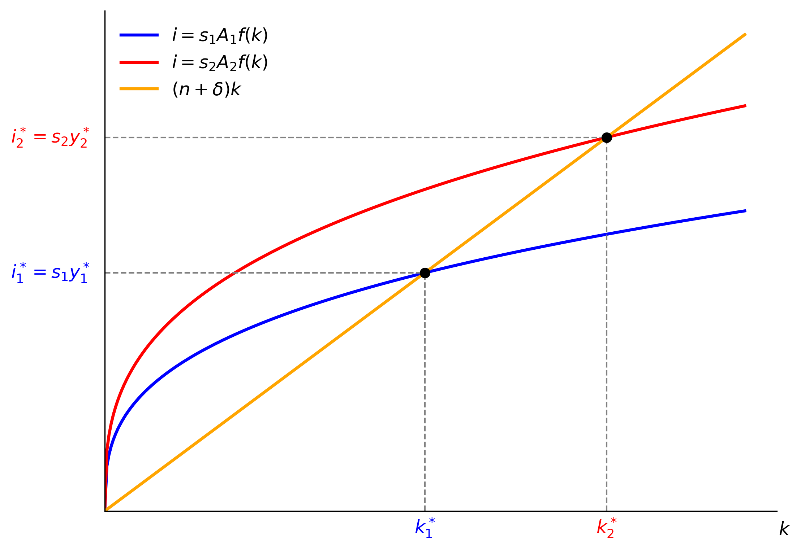
Obr. 15.1 Vplyv zvýšenie miery sporenia alebo úrovne technológie na ustálený stav#
Upozornenie
Keďže zmena \(A\) a zmena \(s\) má rovnaký vplyv na krivku \(sAf(k)\), Obr. 15.1 slúži rovnako pre analýzu zvýšenia miery sporenia \(s\) ako aj zvýšenia úrovne technológie \(A\).
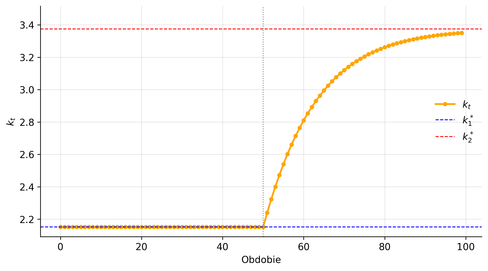
Obr. 15.2 Zmena priebehu časového radu intenzívneho kapitálu po zvýšení miery sporenia v obdobi \(T_0\)#
Obr. 15.3 Zmena priebehu časového radu intenzívneho výstupu po zvýšení miery sporenia v obdobi \(T_0\)#
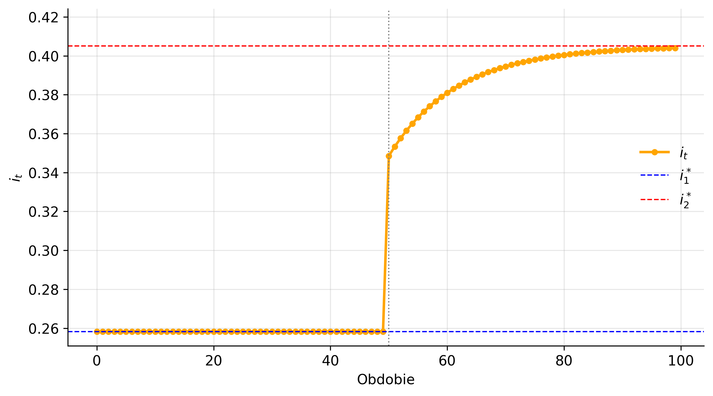
Obr. 15.4 Zmena priebehu časového radu intenzívnych investícií alebo úspor po zvýšení miery sporenia v obdobi \(T_0\)#
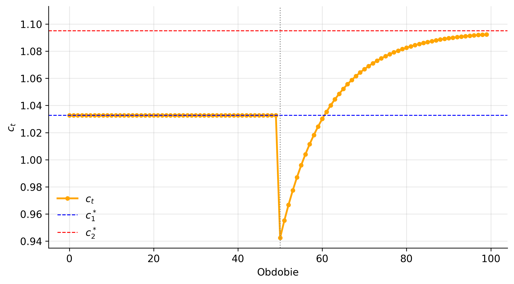
Obr. 15.5 Zmena priebehu časového radu intenzívnej spotreby po zvýšení miery sporenia v obdobi \(T_0\)#
15.1.2. Vplyv zvýšenia úrovne technológie#
Čo sa stane, ak sa v období \(T_0\) zvýši úroveň technológie \(A\)?
Takáto zmena môže nastať napríklad v dôsledku zavedenia produktívnejšej technológie, ktorá umožňuje s rovnakým množstvom kapitálu a práce vyrobiť väčšie množstvo výstupu.
Okamžitá zmena
Intenzívny kapitál v období \(T_0\) podľa (15.1) nezávisí od úrovne technológie. Pokiaľ sa nezmení množstvo kapitálu \(K_{T_0}\) ani práce \(N_{T_0}\), intenzívny kapitál sa bezprostredne po zvýšení úrovne technológie nezmení.
Výstup podľa (14.8) závisí od intenzívneho kapitálu a úrovne technológie,
Keďže sa úroveň technológie zvýši z \(A_1\) na \(A_2\), pričom \(k_{T_0}=k_1^*\) zostáva nezmenený, intenzívny výstup sa v období \(T_0\) okamžite zvýši. Pôvodný výstup je
zatiaľ čo bezprostredne po realizácii šoku je
Keďže \(A_2>A_1\), platí
Intenzívne investície (úspory) podľa (14.9) predstavujú konštantný podiel výstupu. Keďže sa miera sporenia nezmení a výstup sa zvýši, investície sa v období \(T_0\) okamžite zvýšia,
Rovnako sa podľa (14.10) okamžite zvýši intenzívna spotreba,
Okamžité zmeny reflektujú grafy časových radov endogénnych premenných na Obr. 15.6–Obr. 15.9. Intenzívny kapitál sa v období \(T_0\) nezmení. Intenzívny výstup, investície a spotreba v období \(T_0\) skočia do vyšších hodnôt.
Zmena v ustálenom stave
Na Obr. 15.1 je zobrazená zmena ustáleného stavu po zvýšení úrovne technológie. Pôvodný ustálený stav je v bode priesečníka \((n+\delta)k\) a pôvodnej krivky \(sA_1f(k)\).
Ak sa úroveň technológie zvýši z \(A_1\) na \(A_2\), krivka \(sAf(k)\) sa posunie nahor. Intenzívny kapitál v ustálenom stave sa zvýši z \(k_1^*\) na \(k_2^*\) a investície (úspory) z \(i_1^*\) na \(i_2^*\).
Intenzívny kapitál sa v období \(T_0\) nezmení, ale jeho nový ustálený stav je vyšší,
Na Obr. 15.6 preto intenzívny kapitál od obdobia \(T_0\) konverguje z pôvodnej hodnoty \(k_1^*\) k vyššej hodnote nového ustáleného stavu \(k_2^*\).
Intenzívny výstup sa v období \(T_0\) okamžite zvýši v dôsledku vyššej úrovne technológie. V novom ustálenom stave je však vyššia nielen úroveň technológie, ale aj intenzívny kapitál. Platí
a
Keďže
platí
Na Obr. 15.7 preto intenzívny výstup v období \(T_0\) skočí do vyššej hodnoty a následne konverguje k ešte vyššej hodnote v novom ustálenom stave.
Analogicky môžeme odvodiť dynamiku intenzívnych investícií. Bezprostredne po realizácii šoku platí
zatiaľ čo v novom ustálenom stave
Keďže miera sporenia \(s\) zostáva konštantná a
platí
Na Obr. 15.8 preto intenzívne investície v období \(T_0\) skočia do vyššej hodnoty a následne konvergujú k ešte vyššej hodnote v novom ustálenom stave. Rovnakým spôsobom môžeme odvodiť dynamiku intenzívnej spotreby. Bezprostredne po realizácii šoku platí
zatiaľ čo v novom ustálenom stave
Keďže miera sporenia sa nemení a výstup v novom ustálenom stave je vyšší ako bezprostredne po realizácii šoku,
Na Obr. 15.9 preto intenzívna spotreba v období \(T_0\) skočí do vyššej hodnoty a následne konverguje k ešte vyššej hodnote v novom ustálenom stave.
Zvýšenie úrovne technológie teda okamžite zvýši intenzívny výstup, investície a spotrebu, zatiaľ čo intenzívny kapitál sa okamžite nezmení. Po šoku sa ekonomika nachádza v prechodnom stave. Intenzívny kapitál postupne rastie a spolu s ním ďalej rastú výstup, investície a spotreba, až kým všetky intenzívne premenné nedosiahnu svoje hodnoty v novom ustálenom stave.
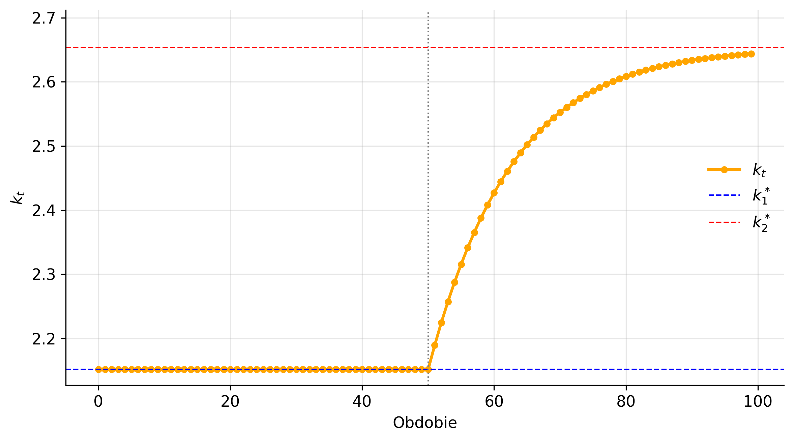
Obr. 15.6 Zmena priebehu časového radu intenzívneho kapitálu po zvýšení úrovne technológie v obdobi \(T_0\)#
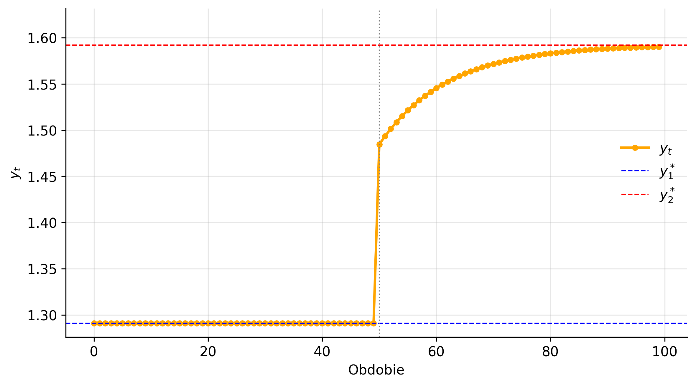
Obr. 15.7 Zmena priebehu časového radu intenzívneho výstupu po zvýšení úrovne technológie v obdobi \(T_0\)#
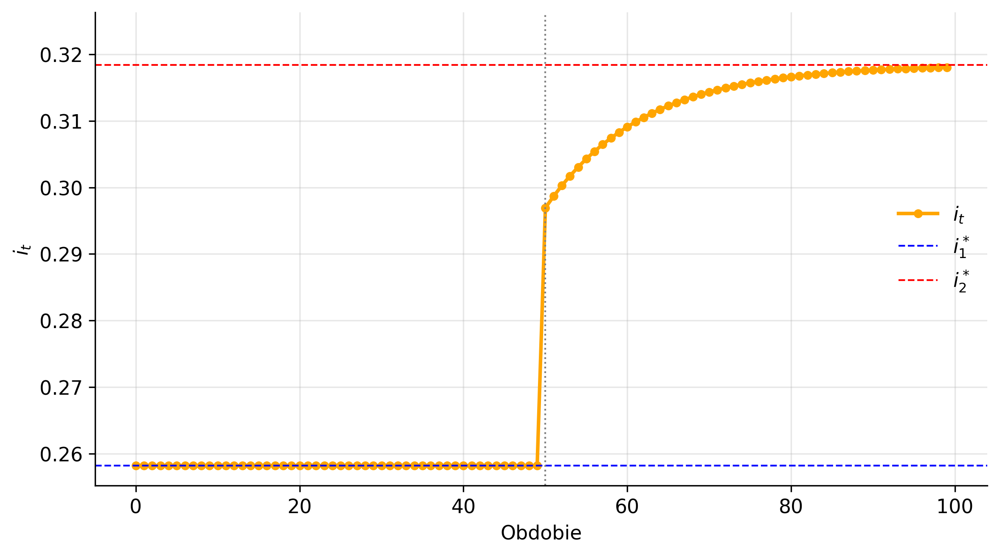
Obr. 15.8 Zmena priebehu časového radu intenzívnych investícií alebo úspor po zvýšení úrovne technológie v obdobi \(T_0\)#
Obr. 15.9 Zmena priebehu časového radu intenzívnej spotreby po zvýšení úrovne technológie v obdobi \(T_0\)#
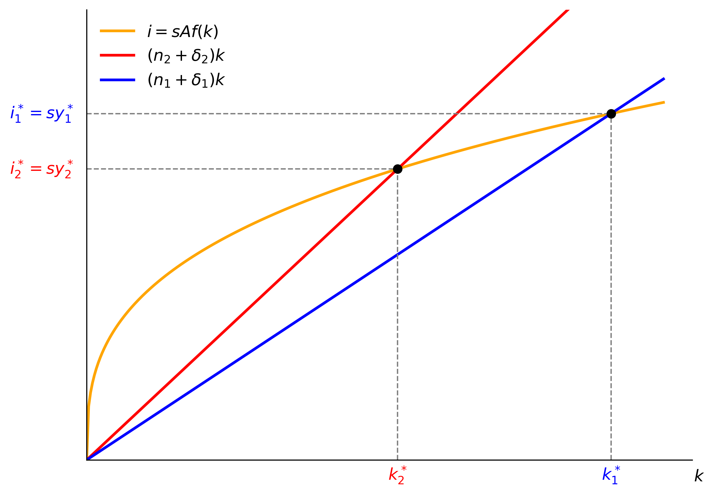
Obr. 15.10 Vplyv zvýšenie miery rastu práce alebo miery znehodnotenia kapitálu na ustálený stav#
15.1.3. Vplyv zvýšenia miery rastu práce alebo miery znehodnotenia kapitálu#
Zvýšenie miery rastu práce \(n\) a zvýšenie miery znehodnotenia kapitálu \(\delta\) majú v Solowovom modeli rovnaký vplyv na dynamiku intenzívnych endogénnych premenných. Obidve premenné vstupujú do podmienky ustáleného stavu prostredníctvom súčtu \(n+\delta\).
K zvýšeniu miery rastu práce \(n\) môže dôjsť napríklad v dôsledku dlhodobo vyššej pôrodnosti alebo čistého prílevu pracovnej sily zo zahraničia. Vyššia miera znehodnotenia kapitálu \(\delta\) môže byť dôsledkom rýchlejšieho ekonomického zastarávania existujúcich strojov, zariadení alebo budov.
Okamžitá zmena
Zvýšenie miery rastu práce \(n\) nemení množstvo práce \(N_{T_0}\) v období realizácie šoku, ale mení jeho rast v nasledujúcich obdobiach. Rovnako zvýšenie miery znehodnotenia kapitálu \(\delta\) nemení množstvo kapitálu \(K_{T_0}\) v období realizácie šoku, ale ovplyvňuje jeho vývoj v nasledujúcich obdobiach.
Keďže sa v období \(T_0\) množstvo kapitálu \(K_{T_0}\) ani práce \(N_{T_0}\) nezmení, podľa (15.1) sa nezmení ani intenzívny kapitál,
Úroveň technológie \(A\) sa nemení, preto sa podľa (14.8) bezprostredne nezmení ani intenzívny výstup,
Miera sporenia \(s\) a intenzívny výstup zostávajú v období \(T_0\) nezmenené, preto sa podľa (14.9) nezmenia ani intenzívne investície,
Rovnako sa podľa (14.10) nezmení intenzívna spotreba,
Zvýšenie miery rastu práce alebo miery znehodnotenia kapitálu teda nespôsobí v období \(T_0\) okamžitý skok žiadnej z intenzívnych endogénnych premenných.
Zmena v ustálenom stave
Na Obr. 15.10 je zobrazená zmena ustáleného stavu po zvýšení miery rastu práce \(n\) alebo miery znehodnotenia kapitálu \(\delta\). Pôvodný ustálený stav je v bode priesečníka krivky \(sAf(k)\) a priamky \((n_1+\delta_1)k\).
Ak sa zvýši miera rastu práce z \(n_1\) na \(n_2\) alebo miera znehodnotenia kapitálu z \(\delta_1\) na \(\delta_2\), priamka \((n+\delta)k\) sa pootočí nahor. Krivka \(sAf(k)\) sa nezmení. Nový priesečník sa preto nachádza pri nižšej hodnote intenzívneho kapitálu,
Keďže sa intenzívny kapitál v období \(T_0\) okamžite nezmení,
Ekonomika sa preto po šoku ocitne v prechodnom stave a intenzívny kapitál začne konvergovať k nižšej hodnote nového ustáleného stavu. Túto dynamiku zobrazuje Obr. 15.11.
Keďže úroveň technológie \(A\) zostáva konštantná a podľa (14.8) je intenzívny výstup rastúcou funkciou intenzívneho kapitálu, pokles \(k^*\) spôsobí pokles výstupu v novom ustálenom stave,
Intenzívny výstup sa v období \(T_0\) nezmení, ale následne spolu s poklesom intenzívneho kapitálu konverguje k nižšej hodnote nového ustáleného stavu. Túto dynamiku zobrazuje Obr. 15.12.
Miera sporenia sa nemení a podľa (14.9) platí
Pokles intenzívneho výstupu preto spôsobí pokles intenzívnych investícií v novom ustálenom stave,
Intenzívne investície sa v období \(T_0\) nezmenia a následne konvergujú k nižšej hodnote nového ustáleného stavu, ako zobrazuje Obr. 15.13.
Rovnako podľa (14.10) platí
Keďže miera sporenia zostáva konštantná a intenzívny výstup v novom ustálenom stave klesne, klesne aj intenzívna spotreba,
Intenzívna spotreba sa v období \(T_0\) nezmení a následne konverguje k nižšej hodnote nového ustáleného stavu. Túto dynamiku zobrazuje Obr. 15.14.
Zvýšenie miery rastu práce alebo miery znehodnotenia kapitálu teda nespôsobí okamžitú zmenu intenzívnych endogénnych premenných. Zmení však ich ustálené hodnoty. Po šoku preto intenzívny kapitál, výstup, investície a spotreba postupne klesajú a konvergujú k nižším hodnotám v novom ustálenom stave.
Všimnite si
Vplyv populačného rastu závisí od mechanizmu ekonomického modelu. V modeli prekrývajúcich sa generácií v časti Systémy dôchodkového zabezpečenia sme ukázali, že vysoká miera rastu populácie môže zvyšovať výnos priebežného dôchodkového systému, pretože na jedného príjemcu dôchodku pripadá viac pracujúcich. V Solowovom modeli pôsobí rast populácie iným kanálom. Vyššia miera rastu práce zvyšuje množstvo investícií potrebných na udržanie intenzívneho kapitálu, a preto znižuje jeho ustálenú hodnotu. V dôsledku toho je nižší aj výstup a spotreba na obyvateľa v ustálenom stave.
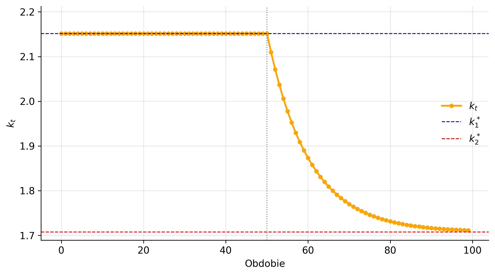
Obr. 15.11 Zmena priebehu časového radu intenzívneho kapitálu po zvýšení miery rastu práce alebo miery znehodnotenia kapitálu v obdobi \(T_0\)#
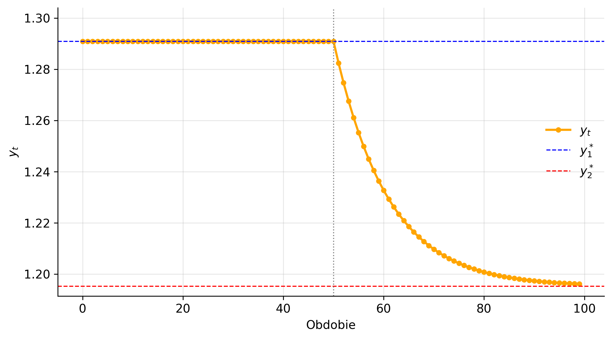
Obr. 15.12 Zmena priebehu časového radu intenzívneho výstupu po zvýšení miery rastu práce alebo miery znehodnotenia kapitálu v obdobi \(T_0\)#
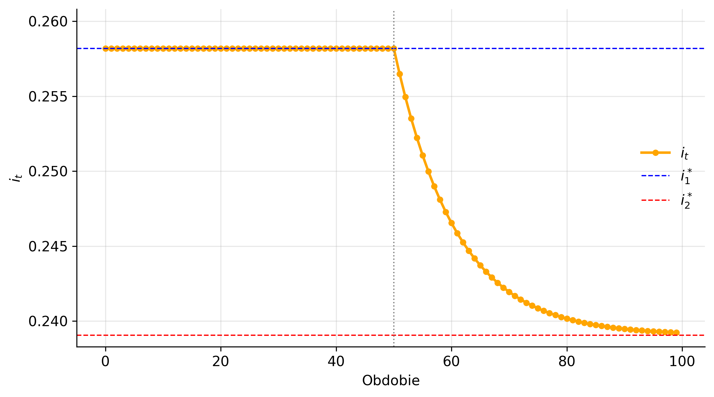
Obr. 15.13 Zmena priebehu časového radu intenzívnych investícií alebo úspor po zvýšení miery rastu práce alebo miery znehodnotenia kapitálu obdobi \(T_0\)#
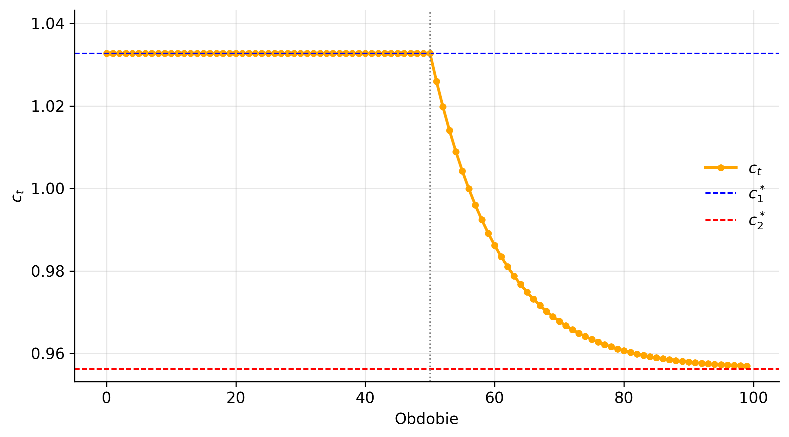
Obr. 15.14 Zmena priebehu časového radu intenzívnej spotreby po zvýšení miery rastu práce alebo miery znehodnotenia kapitálu v obdobi \(T_0\)#
15.1.4. Vplyv zvýšenia množstva práce#
Nakoniec preskúmame vplyv exogénneho zvýšenia množstva práce \(N_{T_0}\) v období realizácie šoku. K takejto zmene môže dôjsť napríklad v dôsledku jednorazového prílevu pracovnej sily zo zahraničia.
Okamžitá zmena
Kľúčová pre identifikáciu okamžitého vplyvu šoku je (15.1),
Množstvo kapitálu \(K_{T_0}\) je v období realizácie šoku predeterminované a bezprostredne sa nezmení. Ak sa množstvo práce \(N_{T_0}\) zvýši, intenzívny kapitál sa preto okamžite zníži,
Ak sa ekonomika pred realizáciou šoku nachádzala v ustálenom stave, platí
Pokles intenzívneho kapitálu podľa (14.8) spôsobí okamžitý pokles intenzívneho výstupu,
Keďže miera sporenia \(s\) zostáva nezmenená, podľa (14.9) sa okamžite znížia aj intenzívne investície,
Rovnako sa podľa (14.10) okamžite zníži intenzívna spotreba,
Exogénne zvýšenie množstva práce teda spôsobí v období \(T_0\) okamžitý pokles všetkých intenzívnych endogénnych premenných. Tieto skoky zobrazujú Obr. 15.15–Obr. 15.18.
Zmena v ustálenom stave
Exogénne zvýšenie množstva práce \(N_{T_0}\) nemení žiadny z parametrov, ktoré určujú ustálený stav Solowovho modelu. Ako vidíme na Obr. 14.6, krivky \(sAf(k)\) a \((n+\delta)k\) od množstva práce \(N\) nezávisia. Ich priesečník sa preto po zvýšení \(N_{T_0}\) nezmení. Intenzívny kapitál v ustálenom stave zostáva
Keďže sa nezmenila úroveň technológie ani žiadny z ostatných parametrov modelu, nezmenia sa ani ustálené hodnoty ostatných intenzívnych premenných,
Šok teda nezmení ustálený stav ekonomiky. V období \(T_0\) však spôsobí, že intenzívne endogénne premenné klesnú pod svoje ustálené hodnoty. Ekonomika sa preto ocitne v prechodnom stave.
Na Obr. 15.15 intenzívny kapitál v období \(T_0\) skočí na nižšiu hodnotu a následne konverguje späť k pôvodnej hodnote ustáleného stavu \(k_1^*\). Spolu s rastom intenzívneho kapitálu rastie aj intenzívny výstup, ktorý na Obr. 15.16 konverguje späť k pôvodnej hodnote \(y_1^*\).
Keďže miera sporenia zostáva konštantná, intenzívne investície na Obr. 15.17 kopírujú dynamiku intenzívneho výstupu a konvergujú späť k pôvodnej hodnote \(i_1^*\). Rovnako intenzívna spotreba na Obr. 15.18 konverguje späť k pôvodnej hodnote \(c_1^*\).
Exogénne zvýšenie množstva práce sa teda od predchádzajúcich šokov zásadne odlišuje. Nemení ustálený stav intenzívnych premenných, ale spôsobí ich okamžitý odklon od ustáleného stavu. Ekonomika následne prechádza prechodným stavom, počas ktorého všetky intenzívne endogénne premenné konvergujú späť k svojim pôvodným ustáleným hodnotám.
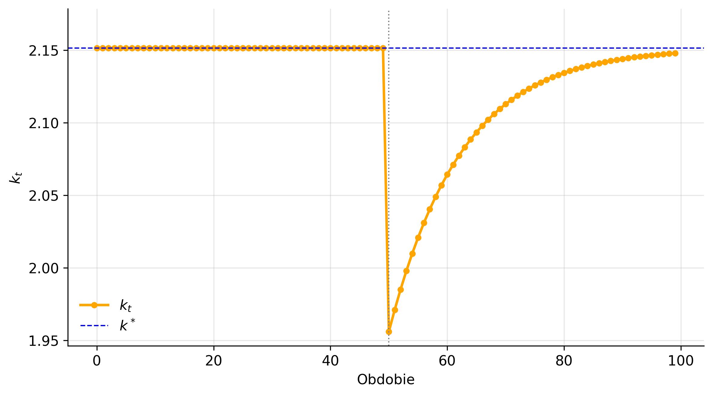
Obr. 15.15 Zmena priebehu časového radu intenzívneho kapitálu po exogénnom zvýšení práce v obdobi \(T_0\)#
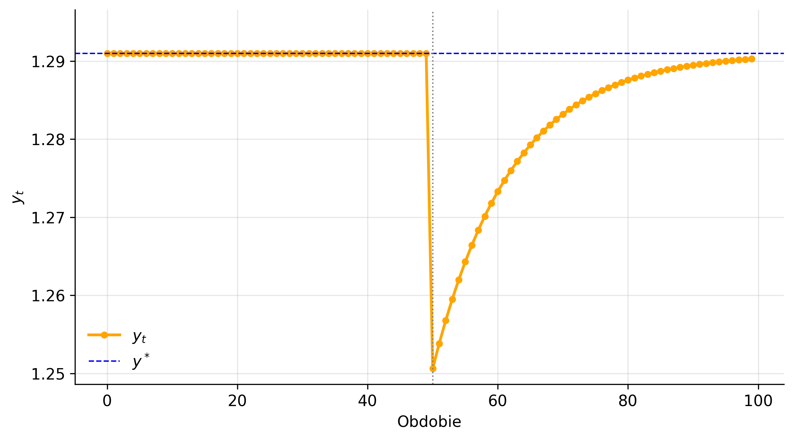
Obr. 15.16 Zmena priebehu časového radu intenzívneho výstupu po exogénnom zvýšení práce v obdobi \(T_0\)#
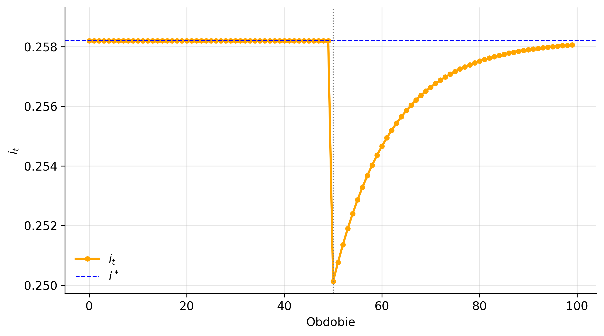
Obr. 15.17 Zmena priebehu časového radu intenzívnych investícií alebo úspor po exogénnom zvýšení práce v obdobi \(T_0\)#
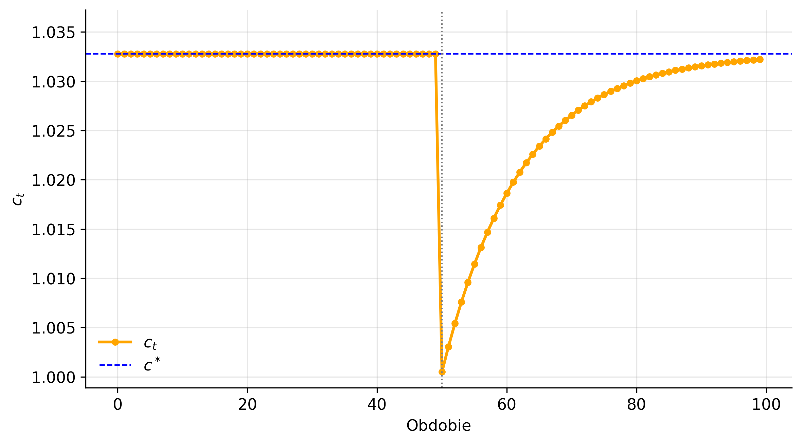
Obr. 15.18 Zmena priebehu časového radu intenzívnej spotreby po exogénnom zvýšení práce v obdobi \(T_0\)#
Poznámka
Rovnaký vplyv na intenzívne premenné má aj neočakávaný pokles množstva kapitálu \(K_{T_0}\). Napríklad prírodná katastrofa alebo vojna môže v období \(T_0\) zničiť časť existujúcej zásoby kapitálu. Hoci je kapitál predeterminovanou premennou, takýto exogénny šok môže jeho množstvo bezprostredne znížiť.
Podľa (15.1)
preto zvýšenie množstva práce \(N_{T_0}\) pri nezmenenom kapitáli aj zníženie množstva kapitálu \(K_{T_0}\) pri nezmenenej práci spôsobia okamžitý pokles intenzívneho kapitálu. Ak sa pritom nezmenia parametre modelu, ustálený stav zostáva nezmenený a intenzívne premenné následne konvergujú späť k svojim pôvodným ustáleným hodnotám.
15.2. Hypotézy konvergencie#
Ak meriame životnú úroveň krajín pomocou HDP na obyvateľa, jeho ekvivalentom v Solowovom modeli je intenzívny výstup. Za mieru blahobytu možno považovať intenzívnu spotrebu.
Obidve premenné v ustálenom stave súvisia s intenzívnym kapitálom. Čím vyšší je \(k^*\), tým vyšší je \(y^*\). Spravidla je vyšší aj \(c^*\). Ak sa však intenzívny kapitál zvýši v dôsledku vyššej miery sporenia, spotreba v ustálenom stave sa zvýši iba vtedy, ak sa kapitál v ekonomike nachádza pod úrovňou zlatého pravidla.
Ukázali sme, že intenzívny kapitál v ustálenom stave závisí od miery sporenia \(s\), úrovne technológie \(A\), miery rastu práce \(n\) a miery znehodnotenia kapitálu \(\delta\). Tento vzťah môžeme zapísať ako
pričom \(k^*\) je rastúcou funkciou \(s\) a \(A\) a klesajúcou funkciou \(n\) a \(\delta\).
V príklade (Príklad: Ustálený a prechodný stav) sme odvodili ustálený stav za predpokladu Cobbovej-Douglasovej produkčnej funkcie s konštantnými výnosmi z rozsahu v tvare (14.15).
Znamená to, že ekonomiky s vyššou mierou sporenia a úrovňou technológie a s nižšou mierou rastu práce a mierou znehodnotenia kapitálu majú za inak rovnakých podmienok vyšší intenzívny kapitál a výstup v ustálenom stave. Spravidla majú aj vyššiu intenzívnu spotrebu.
Uvažujme dve ekonomiky, ktoré sa líšia štartovaciou úrovňou intenzívneho kapitálu a výstupu. Prvá ekonomika je chudobnejšia,
Predpokladajme najskôr, že obidve ekonomiky majú rovnakú mieru sporenia, úroveň technológie, mieru rastu práce a mieru znehodnotenia kapitálu,
Obidve ekonomiky konvergujú k rovnakému ustálenému stavu,
Priebeh časových radov intenzívneho výstupu v oboch ekonomikách je na Obr. 15.19.
V dôsledku klesajúceho hraničného produktu kapitálu má dodatočná jednotka kapitálu väčší vplyv na výstup v ekonomike s nižšou úrovňou intenzívneho kapitálu. Chudobnejšia ekonomika preto počas konvergencie k spoločnému ustálenému stavu rastie rýchlejšie ako bohatšia ekonomika.
- Hypotéza absolútnej \(\beta\)-konvergencie
Ak majú ekonomiky rovnaký ustálený stav, ekonomika s nižšou štartovacou úrovňou intenzívneho výstupu rastie rýchlejšie ako ekonomika s vyššou štartovacou úrovňou intenzívneho výstupu. Rozdiel v intenzívnom výstupe medzi ekonomikami sa preto postupne zmenšuje.
Na Obr. 15.19 sú časové rady reálneho HDP dvoch krajín s rôznym štartovacím intenzívnym kapitálom a spoločným ustáleným stavom. Chudobnejšia krajina dobieha bohatšú.
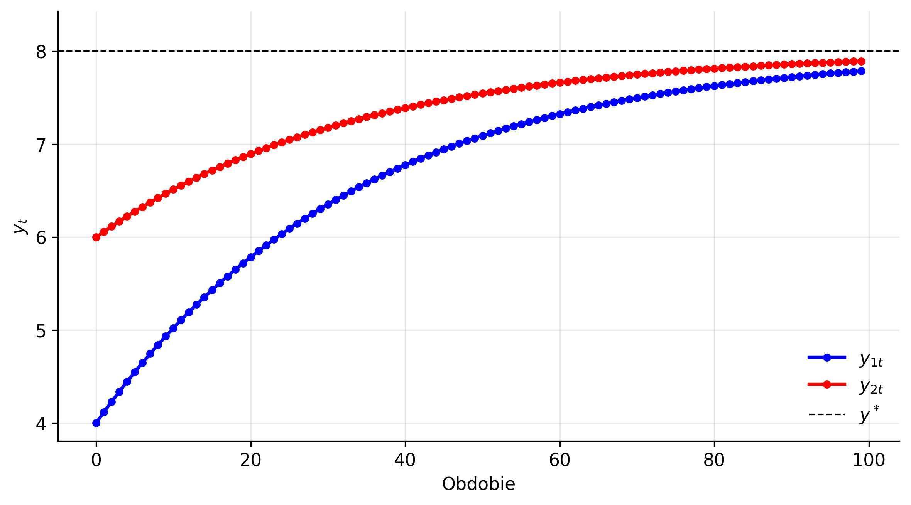
Obr. 15.19 Intenzívny výstup dvoch krajín s rôznými hodnotami štartovacieho kapitálu a spoločným ustáleným stavom#
Hypotézu absolútnej \(\beta\)-konvergencie v danej skupine krajín možno testovať ekonometrickou špecifikáciou
pričom
\(g_i\): priemerná ročná miera rastu reálneho HDP na obyvateľa v krajine \(i\) v skúmanom období,
\(y_i\): štartovacia úroveň reálneho HDP na obyvateľa v krajine \(i\),
\(\beta_0,\beta_1\): parametre modelu,
\(u_i\): náhodná zložka.
Parameter \(\beta_1\) vyjadruje zmenu priemernej ročnej miery rastu reálneho HDP na obyvateľa spojenú s 1% zmenou jeho štartovacej úrovne.
Hypotéza absolútnej \(\beta\)-konvergencie predpokladá \(\beta_1<0.\)
Predpoklad spoločného ustáleného stavu je veľmi silný. Ekonomiky sa v skutočnosti môžu líšiť mierou sporenia, úrovňou technológie, mierou rastu práce alebo mierou znehodnotenia kapitálu. Rozdielne hodnoty týchto premenných znamenajú rozdielne ustálené stavy,
V takom prípade už samotná nižšia štartovacia úroveň intenzívneho výstupu neznamená, že ekonomika musí rásť rýchlejšie. Chudobnejšia ekonomika môže byť blízko svojho nízkeho ustáleného stavu, zatiaľ čo bohatšia ekonomika môže byť ďaleko od svojho vyššieho ustáleného stavu.
Na Obr. 15.20 sú časové rady reálneho HDP dvoch krajín s rôznym štartovacím intenzívnym kapitálom a rôznym ustáleným stavom. Chudobnejšia krajina má aj nižší ustálený stav.
Pre tempo konvergencie preto nie je rozhodujúca iba štartovacia úroveň intenzívneho výstupu, ale aj jej vzťah k ustálenému stavu, ku ktorému daná ekonomika konverguje.
- Hypotéza podmienenej \(\beta\)-konvergencie
Ekonomika rastie tým rýchlejšie, čím nižšia je jej štartovacia úroveň intenzívneho výstupu vzhľadom na jej vlastnú ustálenú úroveň. Ekonomiky preto môžu konvergovať k rozdielnym ustáleným stavom.
Pri porovnávaní tempa rastu rôznych ekonomík preto musíme brať do úvahy rozdiely v premenných, ktoré určujú ich ustálené stavy. V Solowovom modeli sú nimi najmä miera sporenia \(s\), úroveň technológie \(A\), miera rastu práce \(n\) a miera znehodnotenia kapitálu \(\delta\).
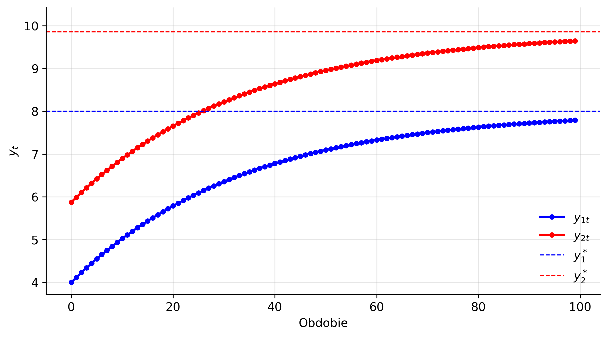
Obr. 15.20 Intenzívny výstup dvoch krajín s rôznými hodnotami štartovacieho kapitálu a rôznymi ustálenými stavmi#
15.2.1. Determinanty ekonomického rastu#
Solowov model identifikuje niekoľko faktorov, ktoré ovplyvňujú ustálený stav ekonomiky. Vyššia miera sporenia \(s\) a vyššia úroveň technológie \(A\) zvyšujú intenzívny kapitál a výstup v ustálenom stave. Naopak, vyššia miera rastu práce \(n\) a vyššia miera znehodnotenia kapitálu \(\delta\) ich znižujú.
Pri testovaní hypotézy podmienenej \(\beta\)-konvergencie preto okrem štartovacej úrovne reálneho HDP na obyvateľa zohľadňujeme aj premenné, ktoré môžu vysvetľovať rozdiely v ustálených stavoch jednotlivých krajín.
Ekonometrickú špecifikáciu (15.2) preto rozšírime o premenné, ktoré môžu vysvetľovať rozdiely v raste a ustálených stavoch jednotlivých krajín,
kde \(\mathbf{d}_i\) je vektor determinantov rastu v krajine \(i\) a \(\boldsymbol{\gamma}\) je vektor príslušných parametrov.
Hypotéza podmienenej \(\beta\)-konvergencie predpokladá \(\beta_1<0\).
Solowov model identifikuje iba niektoré determinanty rastu a ustáleného stavu ekonomiky. Empirický výskum ekonomického rastu preto skúma podstatne širší súbor ekonomických, demografických, inštitucionálnych a politických faktorov. Medzi premenné využívané v empirickom výskume ekonomického rastu patria napríklad ([Bar15]):
miera sporenia a investícií,
populačný rast a plodnosť,
ľudský kapitál charakterizovaný ukazovateľmi vzdelania a zdravia,
kvalita inštitúcií, napríklad vymožiteľnosť práva, ochrana vlastníckych práv alebo ukazovatele politických inštitúcií,
veľkosť a štruktúra verejného sektora,
otvorenosť ekonomiky zahraničnému obchodu,
výmenné relácie,
makroekonomická stabilita, kotrú môže reprezentovať okrem iných aj miera inflácie,
finančný rozvoj a
štruktúra ekonomiky.
Upozornenie
Vzťahy medzi týmito premennými a ekonomickým rastom zistené pomocou rastových regresií nemožno automaticky interpretovať ako kauzálne vplyvy.
15.2.2. Konvergencia vo svete#
Hypotézy konvergencie môžeme využiť na vysvetlenie, prečo ekonomiky východnej Ázie zažili od 60. rokov minulého storočia výrazný hospodársky rast.
V 60. rokoch minulého storočia to boli prevažne chudobné ekonomiky s nízkym reálnym HDP na obyvateľa. V nasledujúcich desaťročiach v nich prebiehali významné hospodárske a inštitucionálne zmeny, rástla miera úspor a investícií, ľudský kapitál a otvorenosť zahraničnému obchodu a dochádzalo k preberaniu nových technológií. Tieto zmeny vytvárali podmienky pre vyšší ustálený stav. Empirický výskum východoázijského rastu pritom poukazuje na kombináciu viacerých vzájomne pôsobiacich faktorov, nie na jedinú príčinu.
Nízka štartovacia úroveň reálneho HDP na obyvateľa spolu s rastom ustáleného stavu vytvorila priestor na rýchlu konvergenciu. Počas niekoľkých desaťročí sa tak viaceré východoázijské ekonomiky výrazne priblížili k úrovni reálneho HDP na obyvateľa vyspelých ekonomík.
Naopak, ekonomiky s malou alebo pomalou konvergenciou môžu byť charakterizované nízkou úrovňou technológie a mierou sporenia, vysokou mierou znehodnotenia kapitálu alebo vysokou mierou rastu práce. Ich ustálený stav môže byť preto podstatne nižší a samotná nízka štartovacia úroveň reálneho HDP na obyvateľa nezaručuje rýchlu konvergenciu.
Ďalším príkladom rýchlej konvergencie je povojnový vývoj Nemecka, Japonska a Francúzska. Druhá svetová vojna spôsobila rozsiahle materiálne škody a narušila fungovanie týchto ekonomík. Mnohé charakteristiky určujúce ich dlhodobý hospodársky potenciál však zostali zachované alebo sa po vojne rýchlo obnovili, napríklad ľudský kapitál, technologické znalosti a inštitúcie podporujúce fungovanie trhov.
Povojnová úroveň intenzívneho kapitálu a výstupu sa preto nachádzala pod úrovňou zodpovedajúcou dlhodobým charakteristikám týchto ekonomík. Nasledujúca akumulácia kapitálu a technologická obnova umožnili rýchlu konvergenciu k vyššiemu ustálenému stavu.
15.2.3. Konvergencia slovenskej ekonomiky#
Podobne môžeme hypotézu konvergencie použiť na interpretáciu vývoja slovenskej ekonomiky. Pred globálnou finančnou krízou Slovensko rýchlo konvergovalo k priemeru európskych ekonomík. Reálny HDP na obyvateľa bol podstatne nižší ako európsky priemer, ale slovenská ekonomika rástla rýchlejšie.
Po globálnej finančnej kríze sa tempo rastu slovenskej ekonomiky spomalilo. Takéto spomalenie môže byť prirodzeným dôsledkom konvergencie, pretože s približovaním ekonomiky k ustálenému stavu sa tempo rastu postupne znižuje. Vývoj slovenskej ekonomiky však naznačuje, že spomalenie konvergencie nemožno vysvetliť iba postupným dobiehaním vyspelejších európskych ekonomík.
Podľa údajov prepočítaných pomocou parity kúpnej sily na Obr. 13.8 sa približovanie Slovenska k európskemu priemeru po globálnej finančnej kríze výrazne spomalilo. Podľa porovnania reálneho HDP na obyvateľa na Obr. 13.12 rástol reálny HDP na obyvateľa medzi globálnou finančnou krízou a pandemickou krízou ešte o niečo rýchlejšie ako európsky priemer.
Po pandemickej kríze sa však konvergencia ďalej spomalila. Reálny HDP na obyvateľa na Slovensku rastie približne rovnakým tempom ako v priemere európskych ekonomík, hoci jeho úroveň dosahuje iba približne 70–80 % európskeho priemeru. Ak chudobnejšia ekonomika rastie rovnakým tempom ako bohatšie ekonomiky, rozdiel v životnej úrovni sa nezmenšuje.
Takýto vývoj nie je konzistentný s hypotézou absolútnej \(\beta\)-konvergencie k spoločnému ustálenému stavu. Solowov model ponúka možné vysvetlenie prostredníctvom podmienenej konvergencie. Pred globálnou finančnou krízou mohli byť determinanty rastu slovenskej ekonomiky priaznivejšie ako v nasledujúcich obdobiach. V terminológii Solowovho modelu mohla k rýchlejšej konvergencii prispievať vyššia miera sporenia \(s\) alebo úroveň technológie \(A\), prípadne nižšia miera rastu práce \(n\) alebo miera znehodnotenia kapitálu \(\delta\). Zhoršenie niektorých z týchto determinantov alebo ich pomalší priaznivý vývoj v porovnaní s ostatnými európskymi ekonomikami môže vysvetľovať spomalenie konvergencie Slovenska.
15.3. Solowov model s lineárnou produkčnou funkciou#
Základným Solowovým modelom sme vysvetlili, prečo niektoré chudobné ekonomiky v histórii dokázali zbohatnúť a iné nedokázali. Doteraz sme nevysvetlili, prečo si ekonomiky západnej civilizácie dokázali udržať trvalý rast dlhodobý rast reálneho HDP na obyvateľa.
Základný Solowov model, s ktorým sme pracovali doteraz predpovedá, že rast intenzívneho výstupu sa zastaví v ustálenom stave.
Tento záver však nezodpovedá dlhodobému vývoju vyspelých ekonomík. Napríklad reálny HDP na obyvateľa v USA od 60. rokov minulého storočia až do globálnej finančnej krízy vykazoval dlhodobý rast približne 2 % ročne. Takýto trvalý rast preto základný Solowov model bez ďalších úprav nedokáže vysvetliť. Ak sa nemení úroveň technológie, ďalšia akumulácia kapitálu už nemôže zabezpečovať trvalý rast životnej úrovne, pretože hraničný produkt kapitálu je klesajúci.
Model teda potrebujeme rozšíriť tak, aby umožňoval trvalý rast intenzívneho výstupu aj v dlhom období. Ukážeme dva spôsoby, ako môže model generovať trvalý rast intenzívneho výstupu. V tejto časti nebudeme predpokladať klesajúci hraničný produkt kapitálu, ale lineárnu produkčnú funkciu. Neskôr ukážeme štandardnejšie riešenie: zachováme klesajúci hraničný produkt kapitálu, ale umožníme exogénny rast úrovne technológie.
Prečo sa v základnom Solowovom modeli rast intenzívneho kapitálu a výstupu v ustálenom stave zastaví? Dôvod je klesajúci hraničný produkt kapitálu.
Klesajúci hraničný produkt kapitálu je dôvodom, prečo je funkcia základnej rovnice Solowovho modelu (14.7) \(\phi(k)\) na Obr. 14.1 konkávna. Vďaka jej konkávnosti sa pretne s priamkou zvierajúcou s osami \(45^\circ\) uhol \(k′ = k\). Keby rástla prudšie ako priamka \(k′ = k\), pre všetky \(k > 0\), intenzívny kapitál by nepretržite rástol. Príklad je zobrazený na Obr. 15.21.
Klesajúci hraničný produkt je prirodzeným predpokladom, ak kapitál chápeme iba ako fyzický kapitál, teda stroje, zariadenia a budovy. Ak však pojem kapitálu rozšírime aj o ľudský kapitál, teda vzdelanie, kvalifikáciu a ďalšie vlastnosti zvyšujúce produktivitu práce, klesajúci hraničný produkt takto široko chápaného kapitálu už nemusí byť nevyhnutný. Ak dodatočná jednotka kapitálu prináša stále rovnaký prírastok produkcie, ekonomika sa nemusí približovať k ustálenému stavu a intenzívny výstup môže rásť nepretržite. Na tejto myšlienke sú založené jednoduché modely endogénneho rastu, ku ktorým sa dostaneme neskôr.
Analyzujme Solowov model, ak neuvažujeme predpoklad klesajúceho hraničného produktu kapitálu. V lineárnej produkčnej funkcii sú hraničné produkty konštantné. Preto uvažujeme o veľmi jednoduchej produkčnej funkcii v tvare:
Zaujímavosť
Anglicky písané práce zaoberajúce sa hospodárskym rastom Solowov model s lineárnou produkčnou funkciou nazývajú „AK model” pre tvar produkčnej funkcie (15.4).
Základná rovnica Solowovho modelu (14.7) sa nezmenila. Dosaďme do nej za produkčnú funkciu \(Af(k)\) lineárny vzťah (15.4) a po úprave získame:
Predpokladáme, že zlomok v (15.5) je väčší ako 1, alebo čitateľ v zlomku je väčší ako menovateľ, teda
Podľa základnej rovnice (15.5) je intenzívny kapitál v nasledovnom období lineárnou funkciou \(\phi(k)\) intenzívneho kapitálu v aktuálnom období. Vyjadruje ju priamka na Obr. 15.21. Podobne ako na Obr. 14.1 dynamiku intenzívneho kapitálu vyjadríme pomocou priamky, ktorá s osami zviera \(45^\circ\) uhol, \(k′ = k\). Priamka \(\phi(k)\) vyjadruje nasledujúcu hodnotu intenzívneho kapitálu na osi \(y\) pri známej hodnote intenzívneho kapitálu v aktuálnom období na osi \(x\). Priamka \(k′ = k\) slúži na prevod hodnoty z osi \(y\) na os \(x\).
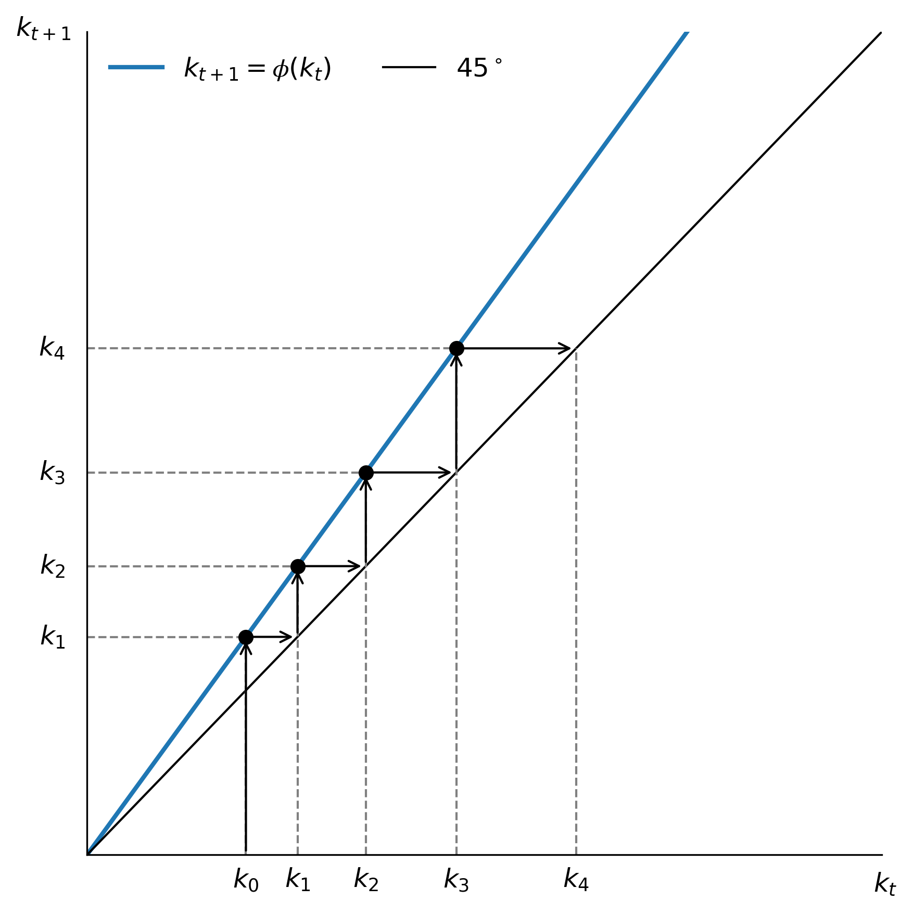
Obr. 15.21 Grafická interpretácia základnej rovnice Solowovho modelu s lineárnou produkčnou funkciou#
Z Obr. 15.21 vyplýva, že intenzívny kapitál stále rastie. Podelením (15.5) kapitálom získame hrubú mieru rastu:
Vyjadrime mieru rastu ostatných intenzívnych premenných. Dosaďme za kapitál do (15.4) v oboch obdobiach a podelme:
Miera rastu intenzívneho kapitálu je konštantná.
Analogicky využijeme (14.9) na vyjadrenie miery rastu intenzívnych investícií (úspor)
a intenzívnej spotreby
V Solowovom modeli s lineárnou produkčnou funkciou teda všetky intenzívne endogénne premenné – kapitál, výstup, investície, úspory a spotreba – rastú rovnakým konštantným tempom, $\( g(k)=g(y)=g(i)=g(c). \)$
Na Obr. 15.22 je využitím Solowovho modelu s lineárnou produkčnou funkciou vygenerovaný časový rad intenzívneho kapitálu.
Kaldorove štylizované fakty
Ekonóm Nicholas Kaldor na základe dlhodobého vývoja vyspelých ekonomík sformuloval súbor empirických pravidelností, ktoré sú známe ako Kaldorove štylizované fakty ekonomického rastu [Kal61]. Medzi ne patrí pozorovanie, že výstup na pracovníka a kapitál na pracovníka rastú v dlhom období približne konštantným tempom a pomer kapitálu k výstupu zostáva približne konštantný.
Vlastnosť modelu, podľa ktorej intenzívny kapitál a intenzívny výstup rastú rovnakým konštantným tempom,
je preto konzistentná s týmito štylizovanými faktmi. Model však ešte musí vysvetliť, aký ekonomický mechanizmus dokáže takýto rast dlhodobo udržiavať.
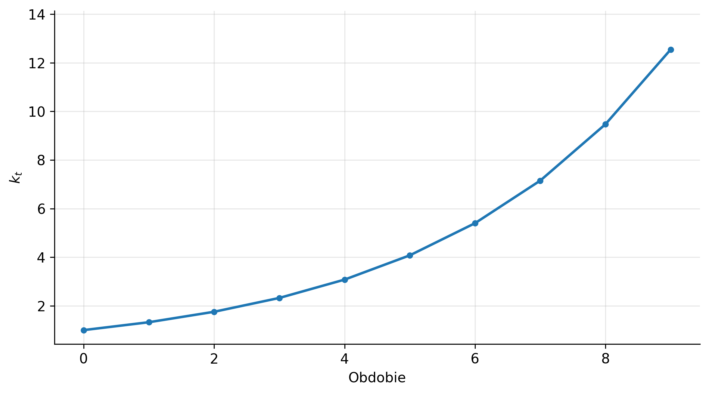
Obr. 15.22 Rast intenzívneho kapitálu v Solowovom modeli s lineárnou produkčnou funkciou#
Základný Solowov model s klesajúcim hraničným produktom kapitálu vysvetľuje konvergenciu ekonomiky k ustálenému stavu. S približovaním k ustálenému stavu sa však rast intenzívnych premenných postupne spomaľuje a v ustálenom stave sa zastaví,
Základný Solowov model preto nedokáže vysvetliť trvalý rast výstupu a intenzívnej spotreby.
V lineárnej produkčnej funkcii je hraničný produkt kapitálu konštantný. V úprave Solowovho modela preto môžu intenzívne premenné trvalo rásť konštantným tempom,
Model s lineárnou produkčnou funkciou dokáže vysvetliť trvalý rast intenzívnych premenných, ale stráca mechanizmus konvergencie k ustálenému stavu. Ekonomiky s rozdielnou štartovacou úrovňou intenzívneho kapitálu rastú pri rovnakých parametroch rovnakým tempom a rozdiel medzi nimi sa nezmenšuje.
Obidva modely teda dokážu vysvetliť iba časť pozorovaného dlhodobého vývoja ekonomík. Základný Solowov model vysvetľuje konvergenciu, ale nie trvalý rast životnej úrovne. Solowov model s lineárnou produkčnou funkciou vysvetľuje trvalý rast, ale nie konvergenciu.
V ďalšej časti rozšírime základný Solowov model o exogénny rast úrovne technológie. Ukážeme, že takto rozšírený model dokáže súčasne vysvetliť konvergenciu aj trvalý rast životnej úrovne.
15.4. Solowov model s exogénnou mierou rastu úrovne technológie#
Doteraz sme predpokladali, že úroveň technológie \(A\) je konštantná. V realite sme svedkami dlhodobého rastu technológie, vďaka ktorému sú kombinácie vstupov práce a kapitálu produktívnejšie. V 19. storočí sa ľudia prepravovali najmä pomocou konského pohonu, mnoho technických zlepšení, bez ktorých si dnes nevieme predstaviť život, neexistovalo. Dnes máme umelú inteligenciu, inteligentné telefóny, výkonné autá, rýchle počítače, chladničky a mrazničky, vďaka ktorým možno efektívne skladovať potraviny.
Najjednoduchší spôsob vyjadrenia rastu úrovne technológie je za predpokladu, že úroveň technológie rastie konštantným tempom – podobne ako práca. Pripomeňme, že práca rastie mierou \(n\). Predpokladajme, že úroveň technológie rastie mierou \(g\):
Úroveň technológie v čase konštantne rastie a môžeme ju zapísať funkciou času \(A(t)\).
Základnú rovnicu Solowovho modelu (14.7) možno zapísať v tvare:
Úroveň technológie \(A(t)\) nie je konštantná, trvalo rastie, dynamiku Solowovho modelu s exogénnym rastom úrovne technológie nemožno vyjadriť diagramom Obr. 14.1, v ktorom je funkcia \(\phi(k)\) v čase nemenná. Vyjadrime zo základnej rovnice Solowovho modelu hrubú mieru rastu:
Výraz \(A(t)f(k)/k\) je priemerný produkt kapitálu. Okrem tohto výrazu sú ostatné členy pravej strany rovnice konštanty. Preto platí, že:
Ak priemerný produkt kapitálu \(A(t)f(k)/k\) klesá, tempo rastu \(k'/k\) sa znižuje.
Ak priemerný produkt kapitálu \(A(t)f(k)/k\) rastie, tempo rastu \(k'/k\) sa zväčšuje.
Ak je priemerný produkt kapitálu \(A(t)f(k)/k\) konštantný, tempo rastu \(k'/k\) sa nemení a tiež je konštantné.
Potrebujeme zistiť, čo determinuje dynamiku priemerného produktu kapitálu. Formulujeme dve protichodné sily ovplyvňujúce priemerný produkt kapitálu v čase:
V dôsledku klesajúceho hraničného produktu kapitálu, funkcia priemerného produktu kapitálu klesá v \(k\). Pri kladnom \(g(k)\), intenzívny kapitál časom rastie a preto priemerný produkt kapitálu časom klesá.
Priemerný produkt kapitálu rastie, lebo rastie úroveň technológie v čitateli.
Ak sa tieto dve sily vyrovnajú, priemerný produkt kapitálu a miera rastu intenzívneho kapitálu budú konštantné. Nehovoríme viac o ustálenom stave ale o ustálenom raste.
- Ustálený rast
Ekonomika sa nachádza v ustálenom raste, ak vybrané endogénne premenné rastú konštantnými mierami.
V príkladoch (Príklad: Miera rastu v Solowovom modeli s exogénnou mierou rastu úrovne technológie a Príklad: Miera rastu v Solowovom modeli s exogénnou mierou rastu úrovne technológie) možno preukázať, že v modeli exogénnym rastom úrovne technológie v trajektórii ustáleného rastu intenzívne premenné rastú rovnakým tempom, čo zpodpovedá Kaldorovému pozorovaniu.
Ak je intenzívny kapitál pod úrovňou, ktorú v danom období predpovedá ustálený rast, je priemerný produkt kapitálu vyšší ako hodnota v ustálenom raste a intenzívny kapitál rastie rýchlejšie. Miera rastu intenzívneho kapitálu konverguje k ustálenej hodnote.
Model dokáže vysvetliť ustálený rast aj konvergenciu. Na Obr. 15.23 je graficky znázornený priebeh intenzívneho kapitálu v ustálenom raste.
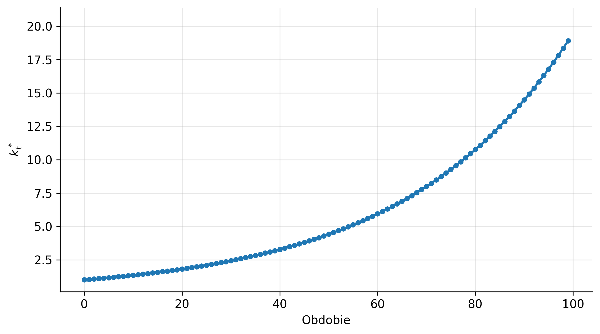
Obr. 15.23 Rast intenzívneho kapitálu v Solowovom modeli s exogénnou mierou rastu úrovne technológie#
Model s exogénnym rastom úrovne technológie ponúka aj ďalšiu možnú interpretáciu súčasného vývoja slovenskej ekonomiky. Spomalenie konvergencie nemusí znamenať, že sa slovenská ekonomika približuje ku konštantnému ustálenému stavu. Môže sa nachádzať na trajektórii ustáleného rastu, na ktorej reálny HDP na obyvateľa naďalej rastie, ale približne rovnakým tempom ako v ostatných európskych ekonomikách. V takom prípade sa rozdiel medzi úrovňou reálneho HDP na obyvateľa na Slovensku a európskym priemerom nezmenšuje.
15.5. Teória endogénneho rastu#
Po zahrnutí exogénneho rastu úrovne technológie dokáže Solowov model vysvetliť dlhodobý rast reálneho HDP na obyvateľa vo vyspelých ekonomikách. Nevysvetľuje však, prečo úroveň technológie rastie. Technický pokrok je exogénnou premennou, ktorej dynamika je určená mimo modelu.
Koncom 80. a začiatkom 90. rokov minulého storočia začali vznikať modely, ktoré sa pokúsili vysvetliť technický pokrok ako výsledok ekonomických rozhodnutí. Významne k ich rozvoju prispel Paul Romer. Za začlenenie technologických inovácií do analýzy dlhodobého ekonomického rastu získal v roku 2018 Nobelovu cenu za ekonómiu [Rom90].
Tieto modely tvoria teóriu endogénneho rastu. Na rozdiel od Solowovho modelu s exogénnym technickým pokrokom sa snažia vysvetliť mieru technologického rastu v rámci samotného modelu. Technický pokrok následne umožňuje trvalý rast reálneho intenzívneho výstupu a kapitálu.
Významná skupina modelov endogénneho rastu sa zameriava na investície do výskumu a vývoja (VaV). Úspešný výskum a vývoj vedie k vzniku nových alebo kvalitnejších produktov, výrobných postupov a technológií. V Solowovom modeli možno výsledok takýchto inovácií interpretovať ako zvýšenie úrovne technológie \(A\).
V modeloch endogénneho technologického pokroku však rast technológie nie je daný zvonka. Vznik nových technológií je výsledkom ekonomických rozhodnutí, napríklad rozhodnutí podnikov investovať do výskumu a vývoja. Modely endogénneho rastu preto umožňujú analyzovať, ako ekonomické podmienky a hospodárska politika ovplyvňujú investície do výskumu a vývoja, technologický pokrok a následne dlhodobý ekonomický rast.
Teórie endogénneho technologického rastu špecifikujú vzťah medzi investíciami do VaV a technologickým pokrokom, ktorý môžeme reprezentovať rastom úrovne technológie \(A\). Keďže výskum spočíva v objavovaní nových poznatkov, jeho výsledok je neistý. Výskumníci pracujúci napríklad na nových liekoch, počítačových technológiách alebo nových výrobných procesoch vopred nevedia, či a aký významný bude výsledok ich výskumu. Neistota je spravidla väčšia pri základnom výskume ako pri postupnom zdokonaľovaní existujúcich produktov a výrobných procesov.
Vo všeobecnosti však predpokladáme, že vyššie investície do VaV vedú k vyššiemu očakávanému technologickému pokroku. Ak má ekonomika vytvárať nové technológie, musia mať výskumníci a inovátori motiváciu investovať zdroje do VaV. Pre súkromné podniky predstavuje takúto motiváciu možnosť dosiahnuť budúci zisk. Výskum môže podporovať aj vláda prostredníctvom dotácií, financovania výskumu na univerzitách a v ďalších výskumných organizáciách alebo prostredníctvom priameho financovania výskumných projektov.
Investície do VaV sa v niektorých ohľadoch podobajú investíciám do fyzického kapitálu. Výdavky na VaV môžeme prirovnať k investíciám \(I\), zatiaľ čo existujúce technologické znalosti môžeme prirovnať k zásobe kapitálu \(K\). Medzi akumuláciou fyzického kapitálu a technologických znalostí však existujú dva podstatné rozdiely. Prvý súvisí s klesajúcim hraničným produktom a druhý s vlastníckymi právami.
Otázkou je, či investície do VaV podliehajú klesajúcemu hraničnému produktu. Ak sa s rastúcou úrovňou technológie stáva jej ďalšie zvyšovanie čoraz nákladnejším a vyžaduje stále väčšie výdavky na VaV, objavovanie nových technológií podlieha klesajúcemu hraničnému produktu. Takýto mechanizmus by postupne spomaľoval technologický pokrok a s ním aj ekonomický rast. Ak však existujúce znalosti uľahčujú vznik ďalších znalostí a klesajúci hraničný produkt výskumu sa nepresadí, technologický pokrok môže pokračovať aj v dlhom období.
Druhý rozdiel súvisí s vlastnosťami technologických znalostí. Technológiu si môžeme predstaviť ako myšlienku alebo návod, ako vo výrobnom procese kombinovať prácu, kapitál a ďalšie vstupy. Fyzický kapitál si naopak môžeme predstaviť ako stroj alebo budovu.
Myšlienka môže byť nerivalitná. Rovnaký poznatok môžu v rovnakom čase využívať viacerí výrobcovia bez toho, aby jeho používanie jedným výrobcom obmedzovalo možnosti ostatných. Príkladmi sú matematické postupy, chemické vzorce, algoritmy alebo počítačový kód. Keď poznatok raz existuje, jeho využívanie ďalším používateľom nevyžaduje opätovné objavenie toho istého poznatku.
Fyzický kapitál je naopak rivalitný. Jeden konkrétny stroj alebo budovu nemožno súčasne použiť na dvoch rozdielnych miestach vo dvoch výrobných procesoch. Podobnú vlastnosť má práca a väčšina ostatných tovarov a služieb.
Nerivalita znalostí však vytvára problém motivácie na ich tvorbu. Predpokladajme, že všetky nové myšlienky sú po objavení okamžite a bezplatne dostupné každému. Súkromný podnik by musel znášať náklady na VaV, ale nemohol by si privlastniť výnosy z výsledku svojho výskumu. Motivácia súkromných podnikov investovať do VaV by preto bola nízka.
Predstavme si napríklad farmaceutickú firmu, ktorá financuje výskum vedúci k objaveniu nového lieku. Ak by bol chemický vzorec lieku bezprostredne po objavení bezplatne dostupný všetkým ostatným výrobcom, konkurenti by mohli výsledok výskumu využívať bez toho, aby znášali náklady jeho objavenia. Firma, ktorá výskum financovala, by preto mala slabšiu motiváciu takéto investície uskutočniť.
Súkromné podniky motivované ziskom budú investovať do VaV iba vtedy, ak budú môcť získať aspoň časť výnosov zo svojich objavov. Dôležitú úlohu preto zohrávajú práva duševného vlastníctva, ktoré umožňujú obmedziť využívanie vytvorených myšlienok ostatnými subjektmi. V niektorých oblastiach možno duševné vlastníctvo chrániť napríklad patentmi alebo autorskými právami.
Takáto ochrana je významná napríklad vo farmaceutickom priemysle, pri vývoji softvéru, ale aj pri tvorbe kníh, hudby alebo filmov. Nie všetky myšlienky však možno alebo je vhodné chrániť právami duševného vlastníctva. Mnohé základné vedecké poznatky sú všeobecne dostupné. Podniky sa navyše niekedy rozhodnú inovácie nepatentovať, napríklad preto, že získanie patentu je nákladné alebo preto, že by pri patentovaní museli zverejniť informácie užitočné pre konkurenciu.
Paul Romer prepojil problém vlastníckych práv k myšlienkam s teóriou technologického pokroku a ekonomického rastu. Podstatné je, aby inovátor mohol získať dostatočnú časť výnosov z úspešnej investície do VaV. Technologické znalosti tak môžu byť nerivalitné, ale zároveň aspoň čiastočne vylúčiteľné.
Romerov model zároveň rozlišuje medzi súkromným a spoločenským výnosom investícií do VaV. Novú myšlienku môžu využívať aj ďalšie ekonomické subjekty a môže sa stať základom pre vznik ďalších inovácií. Spoločenský výnos z inovácie preto môže byť vyšší ako výnos, ktorý dokáže získať jej pôvodný tvorca.
Ak sú spoločenské výnosy z VaV vyššie ako súkromné výnosy, súkromné ekonomické subjekty investujú do VaV menej zdrojov, ako by bolo optimálne z pohľadu celej spoločnosti. Tento rozdiel poskytuje argument pre verejnú podporu VaV, najmä základného výskumu. Vládna podpora však zároveň prináša problém výberu projektov, ktoré majú byť podporené, a potrebu získania verejných príjmov potrebných na financovanie podpory.
Dôležitou vlastnosťou myšlienok je, že ich zásoba sa používaním nevyčerpáva. Existujúce znalosti navyše môžu byť využité pri vytváraní ďalších znalostí. Preto akumulácia technologických znalostí nemusí podliehať rovnakému mechanizmu klesajúceho hraničného produktu ako akumulácia fyzického kapitálu.
Táto vlastnosť umožňuje modelom endogénneho technologického pokroku vysvetliť trvalý rast úrovne technológie a následne aj trvalý rast reálneho intenzívneho výstupu. Na rozdiel od Solowovho modelu s exogénnym technologickým pokrokom však tempo technologického rastu nie je určené mimo modelu, ale vyplýva z ekonomických rozhodnutí o tvorbe nových znalostí.
V Romerovom modeli, v ktorom je VaV realizovaný súkromnými investíciami, závisí miera technologického rastu od očakávaných výnosov z nových objavov. Súkromné výnosy z investícií do VaV ovplyvňuje niekoľko faktorov:
Náklady na výskum. Súkromný výnos z investície do VaV je tým vyšší, čím nižšie sú náklady na uskutočnenie výskumu. Časť týchto nákladov môže ovplyvňovať hospodárska politika. Dotácie na VaV náklady súkromných investorov znižujú, zatiaľ čo administratívne a regulačné požiadavky spojené napríklad so schvaľovaním nových produktov ich môžu zvyšovať.
Veľkosť trhu a výnosy z inovácie. Odmena za úspešnú inováciu závisí od toho, do akej miery inovácia zvýši príjmy z predaja alebo zníži výrobné náklady. Dôležitá je pritom veľkosť trhu, na ktorom možno inováciu využiť. Čím väčší je potenciálny domáci a zahraničný trh, tým vyššie môžu byť očakávané výnosy z investícií do VaV.
Ochrana duševného vlastníctva. Súkromný výnos z investícií do VaV závisí aj od toho, do akej miery dokáže inovátor zabrániť ostatným subjektom bezplatne využívať výsledky jeho výskumu. Významnú úlohu preto zohrávajú práva duševného vlastníctva a možnosť ich vymáhania doma aj v zahraničí. Dôležité je tiež, ako ľahko možno inováciu napodobniť. Čím jednoduchšie ju môžu konkurenti napodobniť, tým menšia môže byť motivácia investovať do jej vývoja.
Zmeny týchto faktorov môžu ovplyvňovať investície do VaV, technologický pokrok a následne mieru dlhodobého ekonomického rastu. V modeloch endogénneho technologického rastu preto hospodárska politika, veľkosť trhu alebo ochrana duševného vlastníctva môžu ovplyvniť nielen úroveň reálneho intenzívneho výstupu, ale aj mieru jeho dlhodobého rastu.
Výskum a vývoj sa vo veľkej miere koncentruje vo vyspelých ekonomikách. Tie majú spravidla veľkú zásobu ľudského kapitálu, kvalitné vzdelávacie a výskumné inštitúcie a dostatok zdrojov na financovanie nákladného a neistého výskumu.
Veľkosť samotnej ekonomiky však nie je nevyhnutnou podmienkou úspešných inovácií. Malá otvorená ekonomika môže realizovať rozsiahly VaV, ak má prístup na veľké zahraničné trhy, dostatok kvalifikovaných pracovníkov, kvalitné výskumné inštitúcie a vhodné podmienky na ochranu a komercializáciu vytvorených znalostí.
Príkladom sú Švédsko a Fínsko, ktoré napriek malej veľkosti ekonomík patria medzi svetových lídrov v oblasti inovácií a investujú vysoký podiel svojho HDP do výskumu a vývoja.
15.6. Difúzia technológie#
Pre svetovú ekonomiku ako celok môže nová technológia vzniknúť iba objavením nových myšlienok. Jednotlivá krajina alebo výrobca však môže zvýšiť svoju úroveň technológie \(A\) aj prevzatím a prispôsobením technológií, ktoré už boli vytvorené inde.
- Difúzia technológie
Difúziou technológie označujeme šírenie existujúcich technológií medzi výrobcami a krajinami.
Pre menej rozvinuté ekonomiky môže byť preberanie a prispôsobovanie existujúcich technológií podstatne menej nákladným spôsobom zvyšovania produktivity ako vývoj vlastných nových technológií. Technologická difúzia preto môže byť významným zdrojom ich ekonomického rastu.
Technológie sa medzi krajinami šíria viacerými spôsobmi. Jedným z nich sú priame zahraničné investície. Nadnárodná spoločnosť môže využívať svoje technológie aj v zahraničných podnikoch. Domáci výrobcovia a pracovníci sa pritom môžu oboznámiť s novými výrobnými postupmi, spôsobmi organizácie výroby alebo novými produktmi.
Ďalším kanálom difúzie je zahraničný obchod. Dovoz strojov, zariadení a ďalších výrobkov umožňuje domácim výrobcom využívať technológie vytvorené v zahraničí a získavať informácie o zahraničných výrobných postupoch. Empirický výskum poukazuje na význam dovozu strojov a zariadení pre prenos technológií do rozvojových krajín, pričom schopnosť tieto technológie využívať súvisí aj s úrovňou ľudského kapitálu. [May01]
Technológie sa môžu šíriť aj prostredníctvom licencií, spolupráce domácich a zahraničných podnikov alebo pohybu ľudí. Obyvatelia, ktorí pracujú alebo študujú v zahraničí, môžu po návrate využívať získané znalosti a skúsenosti v domácej ekonomike.
Difúzia technológie predstavuje ďalší mechanizmus, ktorým môžu menej rozvinuté ekonomiky dobiehať technologicky vyspelejšie ekonomiky. Krajina vzdialená od technologickej hranice má k dispozícii množstvo existujúcich technológií, ktoré môže prevziať a prispôsobiť svojim podmienkam. Jej úroveň technológie \(A\) preto môže spočiatku rásť rýchlo.
S približovaním k technologickej hranici sa však priestor na preberanie existujúcich technológií zmenšuje. Ekonomika musí postupne prechádzať od preberania existujúcich znalostí k tvorbe vlastných inovácií. Tempo technologického dobiehania sa preto môže postupne spomaľovať.
Difúzia technológie však nie je automatická. Schopnosť ekonomiky využívať zahraničné technológie závisí od jej absorpčnej kapacity, ktorú ovplyvňuje napríklad ľudský kapitál, kvalita inštitúcií, otvorenosť zahraničnému obchodu a prepojenie so zahraničnými ekonomikami. Výskum rozvojových krajín poukazuje najmä na komplementaritu medzi dovozom technológií a ľudským kapitálom.
Technologická difúzia preto môže prispieť aj k vysvetleniu rýchleho rastu niektorých východoázijských ekonomík. Otvorenosť zahraničnému obchodu, akumulácia ľudského kapitálu a preberanie zahraničných technológií umožnili týmto ekonomikám rýchlo zvyšovať produktivitu a približovať sa k technologickej hranici.
Solowov model vysvetľuje, prečo ekonomiky s rovnakými dlhodobými charakteristikami môžu konvergovať k spoločnému ustálenému stavu a prečo ekonomiky s rozdielnymi charakteristikami konvergujú k rozdielnym ustáleným stavom. Základný model však bez technologického pokroku nedokáže vysvetliť trvalý rast životnej úrovne. AK model ukazuje, že odstránenie klesajúceho hraničného produktu kapitálu umožní trvalý rast, ale odstráni mechanizmus konvergencie. Solowov model s exogénnym rastom technológie dokáže vysvetliť konvergenciu aj ustálený rast. Teória endogénneho rastu následne vysvetľuje technologický pokrok ako výsledok ekonomických rozhodnutí. Difúzia technológií poskytuje ďalší kanál, prostredníctvom ktorého môžu menej rozvinuté ekonomiky dobiehať technologicky vyspelejšie krajiny.
15.7. Riešené príklady#
V príkladoch využijeme knižnice:
import grafy
15.7.1. Príklad: Komparatívna dynamika#
O ekonomike poznáte tieto údaje: úroveň technológie je \(1\), miera sporenia je \(0,2\), miera znehodnotenia kapitálu je \(0,1\) a miera rastu práce je \(0,02\). Agregátna produkčná funkcia má Cobbov-Douglasov tvar s konštantnými výnosmi z rozsahu a podielom kapitálu na výstupe \(1/3\).
Vypočítajte hodnoty endogénnych intenzívnych premenných v ustálenom stave.
Predpokladajte, že ekonomika je v ustálenom stave. Analyzujte zmenu dynamiky intenzívnych endogénnych premenných, ak sa zvýši
miera sporenia o 35 %,
úroveň technológie o 35 %,
miera znehodnotenia kapitálu o 20 %,
miera rastu práce o 100 %,
množstvo práce \(N_{T_0}\) o 10 %.
V každom prípade vypočítajte okamžité zmeny intenzívnych endogénnych premenných v období realizácie šoku \(T_0\), ich zmeny v novom ustálenom stave a výsledky interpretujte.
15.7.1.1. Riešenie#
15.7.1.1.1. Ustálený stav#
V príklade (Príklad: Ustálený a prechodný stav) sme odvodili intenzívny kapitál v ustálenom stave pre Cobbovu-Douglasovu produkčnú funkciu
Po dosadení
Hodnoty ostatných intenzívnych premenných získame pomocou (14.8)–(14.10),
15.7.1.1.2. Vplyv zvýšenia miery sporenia#
Miera sporenia sa zvýši o 35 % z pôvodnej hodnoty \(s_1=0,2\) na
Okamžité zmeny
Hodnoty intenzívnych premenných v období realizácie šoku \(T_0\) získame pomocou (15.1) a (14.8)–(14.10).
Intenzívny kapitál sa v období \(T_0\) nezmení, pretože sa nezmení množstvo práce \(N_{T_0}\) ani predeterminované množstvo kapitálu \(K_{T_0}\). Podľa (15.1) preto platí
Keďže sa nezmení úroveň technológie ani intenzívny kapitál, nezmení sa podľa (14.8) ani intenzívny výstup,
Zvýšenie miery sporenia však okamžite zvýši intenzívne investície (úspory),
Intenzívne investície sa teda zvýšia približne z \(0,26\) na \(0,35\).
Vyššia miera sporenia zároveň znamená, že sa z nezmeneného výstupu spotrebuje menší podiel. Intenzívna spotreba preto okamžite klesne,
Intenzívna spotreba sa teda zníži približne z \(1,03\) na \(0,94\).
Zmena v ustálenom stave
Vyššia miera sporenia zmení ustálený stav ekonomiky. Pri \(s_2=0,27\) získame
Po dosadení
Hodnoty ostatných intenzívnych premenných v novom ustálenom stave sú
a
Intenzívny kapitál a výstup sa v období \(T_0\) okamžite nezmenia. Následne však konvergujú z pôvodných hodnôt
k vyšším hodnotám nového ustáleného stavu
Intenzívne investície v období \(T_0\) okamžite vzrastú približne z \(0,26\) na \(0,35\) a následne ďalej rastú, až kým nedosiahnu novú ustálenú hodnotu
Intenzívna spotreba v období \(T_0\) naopak okamžite klesne približne z \(1,03\) na \(0,94\). Následný rast intenzívneho kapitálu a výstupu však spôsobí rast spotreby. Spotreba konverguje k novej ustálenej hodnote
ktorá je vyššia ako jej pôvodná ustálená hodnota.
15.7.1.1.3. Vplyv zvýšenia úrovne technológie#
Úroveň technológie sa zvýši o 35 % z pôvodnej hodnoty \(A_1=1\) na
Okamžité zmeny
Zvýšenie úrovne technológie nemení v období \(T_0\) množstvo práce ani predeterminované množstvo kapitálu. Intenzívny kapitál sa preto okamžite nezmení,
Úroveň technológie však vstupuje priamo do produkčnej funkcie. Intenzívny výstup sa preto okamžite zvýši,
Keďže miera sporenia zostáva nezmenená, intenzívne investície sa okamžite zvýšia na
Rovnako sa okamžite zvýši intenzívna spotreba,
Zmena v ustálenom stave
Vyššia úroveň technológie zvýši intenzívny kapitál v ustálenom stave,
Po dosadení
Ostatné intenzívne premenné v novom ustálenom stave sú
Intenzívny kapitál sa teda v období \(T_0\) okamžite nezmení a následne konverguje z hodnoty \(2,15\) k novej ustálenej hodnote \(3,38\).
Výstup, investície a spotreba v období \(T_0\) okamžite skočia do vyšších hodnôt. Ich okamžité zvýšenie je však menšie ako ich celkové zvýšenie v novom ustálenom stave. Po počiatočnom skoku preto ďalej rastú a konvergujú k novým ustáleným hodnotám.
15.7.1.1.4. Vplyv zvýšenia miery znehodnotenia kapitálu#
Miera znehodnotenia kapitálu sa zvýši o 20 % z pôvodnej hodnoty \(\delta_1=0,1\) na
Okamžité zmeny
Zvýšenie miery znehodnotenia kapitálu nemení v období \(T_0\) množstvo práce ani existujúce množstvo kapitálu. Intenzívny kapitál sa preto okamžite nezmení,
Keďže sa nezmení intenzívny kapitál ani úroveň technológie, nezmení sa okamžite ani intenzívny výstup,
Miera sporenia sa nemení, preto sa okamžite nezmenia ani intenzívne investície a spotreba,
Zmena v ustálenom stave
Vyššia miera znehodnotenia kapitálu zníži intenzívny kapitál v ustálenom stave,
Po dosadení
Ostatné intenzívne premenné v novom ustálenom stave sú
V období \(T_0\) teda žiadna intenzívna endogénna premenná okamžite neskočí. Pôvodné hodnoty však už nezodpovedajú novému ustálenému stavu. Ekonomika sa ocitne v prechodnom stave a intenzívny kapitál, výstup, investície a spotreba postupne klesajú a konvergujú k svojim nižším ustáleným hodnotám.
15.7.1.1.5. Vplyv zvýšenia miery rastu práce#
Miera rastu práce sa zvýši o 100 % z pôvodnej hodnoty \(n_1=0,02\) na
Okamžité zmeny
Zvýšenie miery rastu práce nemení množstvo práce \(N_{T_0}\) v období realizácie šoku. Mení až jeho rast v nasledujúcich obdobiach. Keďže sa v období \(T_0\) nezmení množstvo práce ani predeterminované množstvo kapitálu, intenzívny kapitál sa okamžite nezmení,
Nezmení sa ani intenzívny výstup,
intenzívne investície,
ani intenzívna spotreba,
Zmena v ustálenom stave
Vyššia miera rastu práce zníži intenzívny kapitál v ustálenom stave,
Po dosadení
Hodnoty ostatných intenzívnych premenných v novom ustálenom stave sú
Zvýšenie miery rastu práce má v tomto prípade rovnaký vplyv na ustálený stav ako predchádzajúce zvýšenie miery znehodnotenia kapitálu. V obidvoch prípadoch sa súčet \(n+\delta\) zvýšil z \(0,12\) na \(0,14\).
V období \(T_0\) sa žiadna intenzívna endogénna premenná okamžite nezmení. Následne však intenzívny kapitál, výstup, investície a spotreba klesajú a konvergujú k nižším hodnotám nového ustáleného stavu.
15.7.1.1.6. Vplyv zvýšenia množstva práce#
Množstvo práce sa v období \(T_0\) zvýši o 10 %. Označme pôvodné množstvo práce \(N_1\). Po realizácii šoku platí
Okamžité zmeny
Množstvo kapitálu \(K_{T_0}\) je v období realizácie šoku predeterminované a nemení sa. Podľa (15.1) preto zvýšenie množstva práce okamžite zníži intenzívny kapitál,
Keďže pred šokom bola ekonomika v ustálenom stave,
Preto
Intenzívny kapitál teda okamžite klesne približne z \(2,15\) na \(1,96\).
Pokles intenzívneho kapitálu spôsobí podľa produkčnej funkcie okamžitý pokles intenzívneho výstupu,
Keďže miera sporenia zostáva nezmenená, intenzívne investície klesnú na
a intenzívna spotreba na
Zmena v ustálenom stave
Množstvo práce \(N\) nevstupuje medzi parametre určujúce ustálený stav intenzívneho kapitálu,
Zvýšenie \(N_{T_0}\) preto ustálený stav ekonomiky nezmení. Platí
a rovnako
Zvýšenie množstva práce teda spôsobí okamžitý pokles všetkých intenzívnych endogénnych premenných, ale nezmení ich ustálené hodnoty. Ekonomika sa po šoku ocitne v prechodnom stave. Intenzívny kapitál, výstup, investície a spotreba následne rastú a konvergujú späť k svojim pôvodným ustáleným hodnotám.
15.7.1.2. Python#
Intenzívne premenné v ustálenom stave
A = 1.
alpha = 1/3
s = 0.2
n = 0.02
delta = 0.1
k_us,y_us,i_us,c_us=grafy.us(A=A,alpha=alpha,n=n,s=s,delta=delta)
print("Endogénne intenzívne premenné")
print("Kapitál",round(k_us,2))
print("Výstup",round(y_us,2))
print("Investície a úspory",round(i_us,2))
print("Spotreba",round(c_us,2))
Endogénne intenzívne premenné
Kapitál 2.15
Výstup 1.29
Investície a úspory 0.26
Spotreba 1.03
Vplyv zvýšenia miery sporenia
s2=s*1.35
y2,i2,c2=grafy.rovnice(k=k_us,A=A,alpha=alpha,s=s2)
print("Okamžité zmeny endogénnych intenzívnych premenných")
print("Kapitál 0")
print("Výstup",round(y2-y_us,2))
print("Investície a úspory",round(i2-i_us,2))
print("Spotreba",round(c2-c_us,2))
print()
k_us2,y_us2,i_us2,c_us2=grafy.us(A=A,alpha=alpha,n=n,s=s2,delta=delta)
print("Okamžité zmeny intenzívnych premenných v ustálenom stave")
print("Kapitál",round(k_us2-k_us,2))
print("Výstup",round(y_us2-y_us,2))
print("Investície a úspory",round(i_us2-i_us,2))
print("Spotreba",round(c_us2-c_us,2))
Okamžité zmeny endogénnych intenzívnych premenných
Kapitál 0
Výstup 0.0
Investície a úspory 0.09
Spotreba -0.09
Okamžité zmeny premenných v ustálenom stave
Kapitál 1.22
Výstup 0.21
Investície a úspory 0.15
Spotreba 0.06
Vplyv zvýšenia úrovne technológie
A2=A*1.35
y2,i2,c2=grafy.rovnice(k=k_us,A=A2,alpha=alpha,s=s)
print("Okamžité zmeny endogénnych intenzívnych premenných")
print("Kapitál 0")
print("Výstup",round(y2-y_us,2))
print("Investície a úspory",round(i2-i_us,2))
print("Spotreba",round(c2-c_us,2))
print()
k_us2,y_us2,i_us2,c_us2=grafy.us(A=A2,alpha=alpha,n=n,s=s,delta=delta)
print("Okamžité zmeny intenzívnych premenných v ustálenom stave")
print("Kapitál",round(k_us2-k_us,2))
print("Výstup",round(y_us2-y_us,2))
print("Investície a úspory",round(i_us2-i_us,2))
print("Spotreba",round(c_us2-c_us,2))
Okamžité zmeny endogénnych intenzívnych premenných
Kapitál 0
Výstup 0.45
Investície a úspory 0.09
Spotreba 0.36
Okamžité zmeny intenzívnych premenných v ustálenom stave
Kapitál 1.22
Výstup 0.73
Investície a úspory 0.15
Spotreba 0.59
Vplyv zvýšenia miery znehodnotenia kapitálu
delta2=delta*1.2
y2,i2,c2=grafy.rovnice(k=k_us,A=A,alpha=alpha,s=s)
print("Okamžité zmeny endogénnych intenzívnych premenných")
print("Kapitál 0")
print("Výstup",round(y2-y_us,2))
print("Investície a úspory",round(i2-i_us,2))
print("Spotreba",round(c2-c_us,2))
print()
k_us2,y_us2,i_us2,c_us2=grafy.us(A=A,alpha=alpha,n=n,s=s,delta=delta2)
print("Okamžité zmeny intenzívnych premenných v ustálenom stave")
print("Kapitál",round(k_us2-k_us,2))
print("Výstup",round(y_us2-y_us,2))
print("Investície a úspory",round(i_us2-i_us,2))
print("Spotreba",round(c_us2-c_us,2))
Okamžité zmeny endogénnych intenzívnych premenných
Kapitál 0
Výstup 0.0
Investície a úspory 0.0
Spotreba 0.0
Okamžité zmeny intenzívnych premenných v ustálenom stave
Kapitál -0.44
Výstup -0.1
Investície a úspory -0.02
Spotreba -0.08
Vplyv zvýšenia miery rastu práce
n2=n*2
y2,i2,c2=grafy.rovnice(k=k_us,A=A,alpha=alpha,s=s)
print("Okamžité zmeny endogénnych intenzívnych premenných")
print("Kapitál 0")
print("Výstup",round(y2-y_us,2))
print("Investície a úspory",round(i2-i_us,2))
print("Spotreba",round(c2-c_us,2))
print()
k_us2,y_us2,i_us2,c_us2=grafy.us(A=A,alpha=alpha,n=n2,s=s,delta=delta)
print("Okamžité zmeny intenzívnych premenných v ustálenom stave")
print("Kapitál",round(k_us2-k_us,2))
print("Výstup",round(y_us2-y_us,2))
print("Investície a úspory",round(i_us2-i_us,2))
print("Spotreba",round(c_us2-c_us,2))
Okamžité zmeny endogénnych intenzívnych premenných
Kapitál 0
Výstup 0.0
Investície a úspory 0.0
Spotreba 0.0
Okamžité zmeny intenzívnych premenných v ustálenom stave
Kapitál -0.44
Výstup -0.1
Investície a úspory -0.02
Spotreba -0.08
Vplyv zvýšenia práce
k2=k_us/1.1
y2,i2,c2=grafy.rovnice(k=k2,A=A,alpha=alpha,s=s)
print("Okamžité zmeny endogénnych intenzívnych premenných")
print("Kapitál",round(k2-k_us,2))
print("Výstup",round(y2-y_us,2))
print("Investície a úspory",round(i2-i_us,2))
print("Spotreba",round(c2-c_us,2))
print()
k_us2,y_us2,i_us2,c_us2=grafy.us(A=A,alpha=alpha,n=n,s=s,delta=delta)
print("Okamžité zmeny intenzívnych premenných v ustálenom stave")
print("Kapitál",round(k_us2-k_us,2))
print("Výstup",round(y_us2-y_us,2))
print("Investície a úspory",round(i_us2-i_us,2))
print("Spotreba",round(c_us2-c_us,2))
Okamžité zmeny endogénnych intenzívnych premenných
Kapitál -0.2
Výstup -0.04
Investície a úspory -0.01
Spotreba -0.03
Okamžité zmeny intenzívnych premenných v ustálenom stave
Kapitál 0.0
Výstup 0.0
Investície a úspory 0.0
Spotreba 0.0
Priebehy časových radov
Priebehy časových radov na Obr. 15.2, Obr. 15.3, Obr. 15.4, Obr. 15.5, Obr. 15.6, Obr. 15.7, Obr. 15.8, Obr. 15.9, Obr. 15.11, Obr. 15.12, Obr. 15.13, Obr. 15.14, Obr. 15.15, Obr. 15.16, Obr. 15.17 a Obr. 15.18 zobrazujú časové rady vypočítané s rovnakými hodnotami parametrov a rovnakými šokmi ako v tomto príklade.
15.7.2. Príklad: Rast extenzívnych premenných v Solowovom modeli s lineárnou produkčnou funkciou#
Vyjadrite mieru rastu extenzívnych premenných v Solowovom modeli s lineárnou produkčnou funkciou.
15.7.2.1. Riešenie#
Vieme, že v modeli s lineárnou produkčnou funkciou je miera rastu všetkých intenzívnych premenných konštantná a rovnaká,
Extenzívnu premennú získame prenásobením intenzívnej premennej množstvom práce,
Aká je dynamika extenzívnych premenných?
Zapíšme extenzívnu premennú v nasledujúcom období,
Hrubá miera rastu extenzívnej premennej je
Po roznásobení získame
a teda čistá miera rastu extenzívnych premenných je
Pri dostatočne nízkych hodnotách \(n\) a \(g(k)\) je súčin \(ng(k)\) malý, preto môžeme použiť aproximáciu
V spojitom čase je tento vzťah presný.
Extenzívne premenné rastú približne súčtom miery rastu práce a miery rastu intenzívnych premenných.
15.7.3. Príklad: Miera rastu v Solowovom modeli s exogénnou mierou rastu úrovne technológie#
Za predpokladu Cobbovej-Douglasovej produkčnej funkcie s konštantnými výnosmi z rozsahu vyjadrite mieru ustáleného rastu v Solowovom modeli s exogénnou mierou rastu úrovne technológie.
15.7.3.1. Riešenie#
Označme \(k^*\) a \(y^*\) hodnoty intenzívneho kapitálu a výstupu na trajektórii ustáleného rastu v danom období. V nasledujúcom období budú ich hodnoty \(k'^*\) a \(y'^*\).
Upozornenie
Pri ustálenom raste hviezdička neoznačuje konštantnú hodnotu premennej, ale jej hodnotu na trajektórii ustáleného rastu.
Ich vzťah vyjadruje intenzívna produkčná funkcia (14.8), ktorá má v prípade Cobbovej-Douglasovej produkčnej funkcie tvar
a v nasledujúcom období
Pomocou produkčnej funkcie môžeme vyjadriť hrubú mieru rastu intenzívneho výstupu,
Keďže úroveň technológie rastie konštantnou mierou \(g\),
preto
Vieme, že pri ustálenom raste je priemerný produkt kapitálu konštantný. Musí preto platiť
Po úprave
a teda
Pri ustálenom raste rastú intenzívny výstup a intenzívny kapitál rovnakým tempom. Rovnako ako v modeli s lineárnou produkčnou funkciou tento výsledok zodpovedá Kaldorovmu pozorovaniu.
Dosaďme do produkčnej funkcie za mieru rastu kapitálu mieru rastu výstupu,
Postupnými úpravami vyjadríme hrubú mieru rastu intenzívneho výstupu,
a teda
Keďže intenzívny kapitál a výstup rastú pri ustálenom raste rovnakým tempom,
15.8. Neriešené príklady#
15.8.1. Príklad: Komparatívna dynamika#
Poznáte tieto údaje o ekonomike: úroveň technológie je 2, podiel kapitálu na reálnom HDP je 0,5, miera sporenia je 12 %, miera znehodnotenia kapitálu, 4 %, a miera rastu práce, 2 %. Produkčná funkcia je v Cobbovom-Douglasovom tvare s konštantnými výnosmi z rozsahu.
Vypočítajte hodnoty endogénnych intenzívnych premenných v ustálenom stave.
Predpokladajte, že ekonomika je v ustálenom stave. Analyzujte zmenu dynamiky intenzívnych endogénnych premenných, ak
miera sporenia sa zvýši o 5 %,
úroveň technológie sa zvýši o 10 %,
miera znehodnotenia klesne o polovicu,
miera rastu práce klesne o 20 %,
množstvo práce \(N_{T_0}\) sa zvýši o 15 %.
V každom prípade vypočítajte okamžité zmeny intenzívnych endogénnych premenných v období realizácie šoku \(T_0\), ich zmeny v novom ustálenom stave a výsledky interpretujte.
15.8.2. Príklad: Solowov model s lineárnou produkčnou funkciou#
Poznáte tieto údaje o ekonomike: miera sporenia je 20 %, úroveň technológie je 0,6, mieru rastu práce je 2 %, miera znehodnotenia kapitálu je 4,9 %, štartovacia hodnota extenzívneho kapitálu je 40 a práce 10. Produkčná funkcia je v lineárnom tvare \(y = Ak\).
Vypočítajte hodnoty endogénnych intenzívnych premenných v prvých dvoch obdobiach.
Vypočítajte mieru rastu intenzívne vyjadrených premenných.
15.8.3. Príklad: Solowov model s exogénnou mierou rastu úrovne technológie#
Poznáte tieto údaje o ekonomike: štartovacia hodnota úrovne technológie je 2, podiel kapitálu na reálnom HDP je 0,5, štartovacia hodnota extenzívneho kapitálu je 160 a práce 10, miera sporenia je 12 %, miera znehodnotenia kapitálu je 4 % a miera rastu práce je 2 %. Produkčná funkcia je v Cobbovom-Douglasovom tvare s konštantnými výnosmi z rozsahu. Úroveň technológie konštantne rastie, jej miera rastu je 1,2 %.
Vypočítajte hodnoty intenzívnych premenných v prvých dvoch obdobiach.
Vypočítajte mieru rastu intenzívnych premenných, ak sa ekonomika dostane do ustáleného rastu.
Rozhodnite, či je ekonomika v ustálenom raste v prvých dvoch obdobiach. Rozhodnutie zdôvodnite.
15.8.4. Príklad: Miera rastu úrovne technológie v ekonomike USA#
Reálny HDP na obyvateľa v ekonomike USA rástol viac než storočie priemernou ročnou mierou približne 2 %. Predpokladajte, že ustálený rast ekonomiky USA možno vysvetliť Solowovým modelom s exogénnym rastom úrovne technológie a že produkčná funkcia americkej ekonomiky má Cobbov-Douglasov tvar s podielom kapitálu na reálnom HDP \(\alpha=1/3\). Vypočítajte priemernú ročnú mieru rastu úrovne technológie v ekonomike USA.
15.8.5. Príklad: Miera rastu v Solowovom modeli s exogénnou mierou rastu úrovne technológie#
Ak predpokladáte Cobbovu-Douglasovu produkčnú funkciu s konštantnými výnosmi z rozsahu, v Solowovom modeli s exogénnou mierou rastu úrovne technológie vyjadrite mieru rastu všetkých intenzívnych a extenzívnych endogénnych premenných.